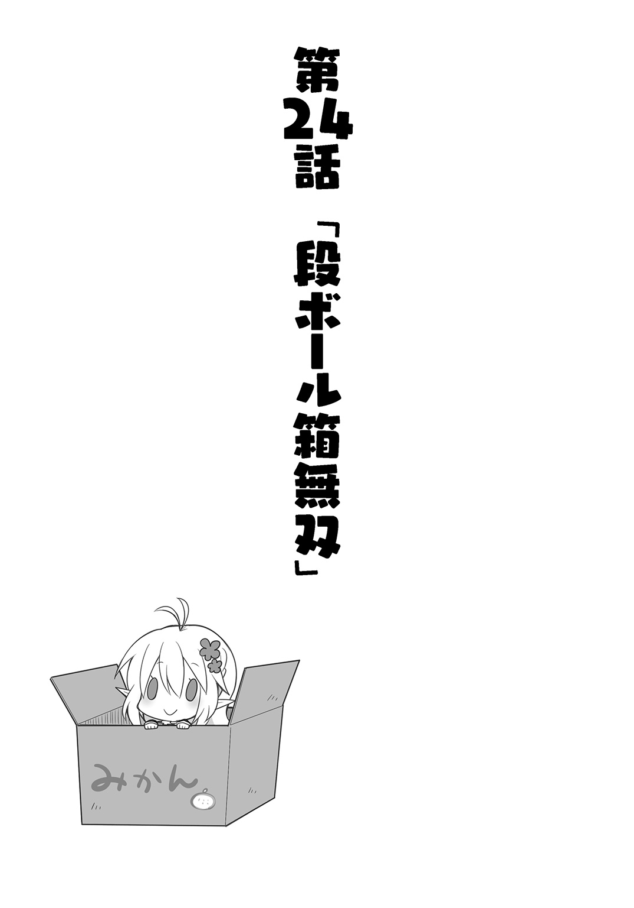
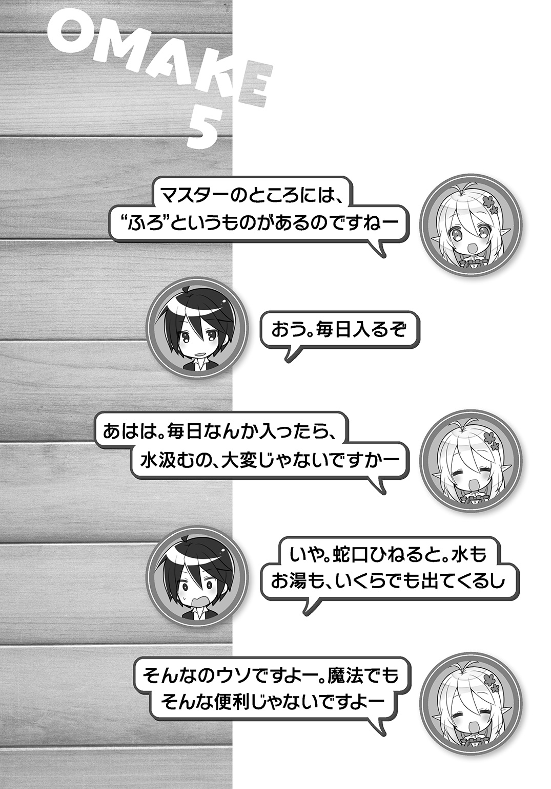

| 異世界Cマート繁盛記 2 | |
| 新木伸 | |
この本は縦書きでレイアウトされています。
また、ご覧になる機種により、表示の差が認められることがあります。
目次
 ダッシュエックス文庫DIGITAL
ダッシュエックス文庫DIGITAL
異世界Ｃマート繁盛記２
新木 伸
ちゅん。ちゅん。ちゅん。
Ｃマートに朝が来た。
「おまえ。朝飯。なんにする？」
歯磨きが終わって、朝飯の準備に取りかかった俺は、缶詰をがさごそとやりながら、バカエルフにそう聞いた。
「わたくしは――。フルーツジュースを、一杯、いただきたく存じます」
「は？」
なんか耳慣れない言いかたで、耳慣れない内容を言われたもので、俺は、思わず振り向いてしまった。
ぎょっとした顔で、バカなことを言ってきたバカエルフを見返す。
「はい？」
「ですから、フルーツジュースを――」
「いま？ なんつった？」
俺はまじまじとバカエルフの顔を見ていた。
「いつもマスターが言うからですよ。いわく――エルフとゆーものは、朝は一杯のフルーツジュースからはじまるものだと」
「ゆったけど」
「ですからわたしも、一杯のフルーツジュースからはじめてみようと思いまして。フルーツジュースとやらはありませんか？」
「あるけど。......あったはず」
俺は缶詰と飲み物のコーナーにいって、がさごそと探した。
ペットボトルのリンゴジュースとオレンジジュースが出てきた。
両方手にして、振り返る――。
「どっちがいい？」
「上品なほうで」
「しらんわ」
「では......、ええと、白いほうで」
白いほうっつーと......。リンゴジュースか。
俺はリンゴジュースのペットボトルを放った。
食事がはじまる。
俺はいつものように缶詰とレトルトの白ご飯。白ご飯を温めたお湯で、インスタントの味噌汁も作る。
バカエルフのやつは、ジュースが一本きり。
どうやら本気で「エルフの朝は一杯のフルーツジュースではじまる」をやろうとしているようである。
「わっわっ。おいしいですよ。これ」
「そうか。よかったな」
俺はそう言った。
俺のほうは、サンマ缶をおかずに白ご飯をかきこんでいる。
「マスターは飲んだことありますか？ おいしいですよ。これほんと」
「ああ。一万本くらいは飲んでるな」
リンゴジュースぐらい、飲んだことあるわい。一万本はジョークだが。
「上品な味がいたしますわー。エルフっぽい味ですわー」
「やめろ。その変な喋りかた」
「エルフ語ですよ」
「うそをつけ」
「うそじゃないですよー。こんなような喋りかたをしてました。エルフの村を訪ねたときに。たしか」
「たしかってなんなんだ」
「ああー。マスターからいただいたジュースはたいへんおいしゅうございますわー」
「いいからやめろ。すぐにやめろ。一秒以内にやめろ」
「わかりましたよ～。でもこれ。本当に飲んだことない味です。はじめてですけど。でも、おいしーです」
いつもの口調に戻った。バカっぽくなった。だいぶましになった。
「ところで食事が終わってしまいました」
「あたりまえだろ」
物足りなさそうな声をあげるバカエルフに、俺はそう言った。
たった一杯きりのジュースだ。すぐになくなってしまっている。
いつもこいつは、がふがふと肉缶三個を食っている。そのうち一缶はワンコ用の大きな缶だから、じつは相当な量になる。
ワンコの缶には穀物や野菜も入っているようで、意外と完全食らしい。バカエルフのやつは、俺の白ご飯のような〝主食〟は抜きで、いつもだいたい肉缶だけを食べている。
「見ていたって、やんねーぞ」
「見ていませんよーだ」
とか言いつつ、バカエルフのやつは、俺の食事を、じーっと見ている。
あ。とうとう、指まで、くわえやがった。
物欲しそうな目になって、じーと見てくる。
「おまえが言いだしたんだろ」
「そうですよ。わたしが自分で言ったんです」
「じゃあ見るのをやめろ。なんか食いにくいだろ」
「マスターこそ、見てくださいよ」
「なにを？」
「わたしです。わたし。――どうですか？ エルフっぽくないですか？」
「は？」
バカエルフのやつは、なんかポーズを取っている。
自称〝エルフのポーズ〟――だとか、なんかきっとそんなようなポーズを取って、ドヤ顔をしている。
「ばか？ おまえ、ばか？」
「だってマスターが言ったんですよ？ エルフというのは、朝は一杯のフルーツジュースからはじまるのだ、って」
「そうだな。言ったな」
「マスターはいつもわたしのことをバカにしますから。バカエルフだ。ダメエルフだ。クズエルフだ。ゴミエルフだ。姫騎士エルフだ。――と」
「バカエルフと言った覚えはあるが、ダメエルフ以後は言った覚えがないのだが。あと姫騎士ってのはなんなんだ？ それはダメなほうの修飾語になるわけか？」
「我々の業界ですと、だいたい、そうです」
「そうなのか」
「――で。おまえはバカエルフを返上しようとしたわけか」
「そうなのです！ 一杯のフルーツジュースから朝をはじめたわたしは！ もはや正統派エルフなのです！」
「肉食うやつは、破門エルフじゃなかったのか？」
「今日は食っていません！」
バカエルフは自信満々で胸を張った。
やっぱこいつはバカだなぁ、と俺は思った。
◇
「ま、ますたぁ......、ま、ますたぁー......、お、おなかがすきましたあぁぁ......」
まだ昼にもなっていないのに、一週間も絶食したような顔になって、バカエルフのやつが言う。
「ああ。それなんだが」
床にへたりこんでいるバカエルフを見下ろしながら、俺は言った。
こいつ。朝からまったく仕事をしていない。ぐでーっと座りこんで、ふうふう言って、三十秒に一回ずつ、「お腹がすきましたぁ」と言ってくる。
ウザいこと、このうえない。
「エルフという種族について、俺はちょっとそのへんで話を聞いてきた」
「一杯のフルーツジュースからはじまるのがエルフです。わたしは守り通しました。よってわたしはエルフなのです。エルフ以外の何者でもありません」
「うん。そうだな」
俺はとりあえずうなずいた。
朝からこの瞬間までは、こいつはエルフだ。
しかし――。
「そして昼食なのだが......。昼は野菜サラダで過ごすのがエルフだそーだ」
「？」
落ちくぼんだ目を、ぎょっとさせて、バカエルフは俺を見る。
この異世界において、エルフという種族は、わりと珍しい種族だった。なにを食っているのか、よくわからない。
ハーフエルフのオバちゃんに、まず聞きに行ってみた。
だが彼女の場合は、エルフだった片親と幼い頃に生き別れになって、その後は人間の世界で育ったそうで、エルフの話は聞けなかった。なんか重い話が飛び出てきそうで、俺はソッコー、逃げ帰ってきた。
次に尋ねたのは、純血のエルフのおねーさんだった。以前、街で見かけた、長い耳のエルフのおねーさんが、街のどこかにいるのだろうと、探してみた。さすがに珍しい種族だから、三人目に聞いた人の友達の友達で、見事に行き当たった。
彼女にちょっと話を聞いてみた。
純血エルフの彼女の場合、朝はたしかに一杯のフルーツジュースらしい。そして昼は野菜サラダ。夜にはさすがに、穀物で作ったパンかナンみたいなものも食べる。肉類はほとんど口にしないが、豆類は摂るそうだ。あとミルクと、チーズみたいなものと、鳥や爬虫類みたいな生き物の卵は摂るそうだ。
なんだ。けっこう肉っぽいもん食ってんじゃん。完全な菜食主義者ってわけでもないんじゃん。
「おまえの志に、俺は甚く感動している。そこでおまえに協力しようと思ってな――。オバちゃんに野菜サラダを作ってもらったぞ」
俺は後ろ手に持っていた野菜サラダのボウルを、前に出した。
「？」
「昼にはちょっと早いかもしれんが......。さあ、昼飯にしようぜー」
エルフの娘は、エルフの娘っぽく、昼はもっしゃもっしゃと野菜と草だけを食って過ごした。
◇
「ま、まふたぁ......、お......、おなかが......、ふきました......」
夕食前だというのに。
エルフの娘は床にぐんにゃりと伸びきっていた。
「おまえ。どんだけ燃費悪いんだよ」
「わたし......、ねんぴ......、わるいって、いったじゃないですかあぁ......」
「いや。知ってるけど」
「ますたー......、そろそろ......、さよなら......、です......。わたしの......、お墓には......、〝尊きエルフ。エルフの掟を貫いて。清らかなまま死ぬ〟――と書いてください」
「いやおまえそもそも破戒エルフだし。肉を絶ってるの今日だけだし」
「さよなら......です」
エルフのやつは、ぱたりと倒れた。ぴくりとも動かなくなった。
俺は、ふう......と、ため息をついた。
一食、野菜サラダにした程度で、餓死するとか......。いったいどんだけだ？
缶詰コーナーに行く。
大きな缶詰をいくつか持ってくる。カロリーの高そうな......っていったら、サバ缶とかツナ缶とか、コンビーフとかか。
ぱっかん、と開けた。
そこらの皿を持ってきて、缶詰を逆さまにする、缶の形がまんま残った円筒形が、三つほど、そそり立った。
それをエルフの死骸の近くに置いた。
そのまま待つこと、数秒......。十数秒......。
ぴくり、と動く。
餓死したはずのエルフの死骸が、なんと、蘇生した。
エルフのやつは、がばっと顔を持ちあげると、がっふがっふと皿に顔を埋める勢いで食いはじめた。
しかし――。手ぐらい使え。いや。手で食うのもアレだな。
スプーンぐらい持ってきてやろうと――。
俺が後ろを向いて、またこちらを向くまでのあいだに、皿は空になってしまっていた。
「マスター！ おかわりください！ おかわり！」
犬のように伏せたバカエルフは、尻尾をぶんぶんと振っていた。
いや。尻尾はないはずなのだが......。ないはずなのだが......。
俺にはたしかに幻の尻尾が見えていた......。
「おまえな。倒れられたら、俺が迷惑すんの。肉を食おうが食うまいが、おまえがバカエルフであることにかわりはないの」
「つまりマスターはわたしがエルフであることを認めたと？」
「ああ。もういいよ。認めた認めた。俺の負けだ。負けだ。食え食え」
いったい、いつ、これは勝負になったのだ？
俺はスプーンを手渡した。エルフの娘は起きあがって食事をはじめる。
その金色の髪の毛を、わっしゃわっしゃとかき混ぜてやりながら、俺は苦笑していた。
「マスター。マスター。マスター。もう一個缶詰あけていいですかー？ いいですかー？ いいですかー？」
ああ。ほんと。
バカエルフめ。
いつもの昼過ぎ。いつものＣマートの店内。
「売れんなー」
「売れませんねー」
俺とバカエルフは、店内に吊したＴシャツを前に、うんうん、二人で、うなっていた。
「白、っつーのが、だめだったんかなー」
「白、っていうのが、だめだったんですかねー」
答えの出ない問いを、二人でシンクロして繰り返す。
Ｔシャツは売れると思ったのだ。皆に喜んでもらえると思ったのだ。
向こうの世界の衣類のなかでも、定番中の定番。誰でも着るし、着てるし。
お出かけ着にも下着にもなるというＴシャツは、こちらの世界でも飛ぶように売れると思ったのだが......。
一番オーソドックスな白無地を選んできたのだ。
しかし、これが、ま～ったくといっていいほど、売れないのだ。
「黒とかのが良かったんかなー。それとも黄色とか赤とか。そういう派手な色のが良かったんかなー。青とか緑だったら、どんなんかなー」
「マスターの世界って染料が豊富なんですねー。色鮮やかなんですねー」
バカエルフはなんか変なところに感心している。
俺の着ているシャツを見て、なにやら、妙に感心している。俺の服装は、ジーンズにシャツ。べつに珍しいものでもなんでもない。でも色鮮やかといわれれば......？ そうなのか？ 紺と青と赤と緑ぐらいの色はあるが。
「そんなとこ感心されてもなー。Ｔシャツは売れんしなー」
「だいたいマスターってば、こんなにたくさん仕入れてきちゃって......。いったい、どーすんですか？ これ？」
段ボール箱に詰まったＴシャツの山に、バカエルフがため息を投げ下ろす。
俺もため息をついた。
「まー。細かく切れば、ぼろきれとかになるんじゃないかー？ 雑巾にもなるしー。タオルにもなるしー。正方形に切って、ハンカチってのどうだー？」
「もったいないですよー。せっかく着られるのにー」
バカエルフのやつは、Ｔシャツの一枚を体にあててそう言っている。
たしかに新品のＴシャツをざくざく切り刻むのは勿体ない気もしないでもない......。
「そうだ。わたしたちが率先して着てみるのはどうでしょう？ みんな馴れてないから買っていかないんじゃないですか？」
バカエルフのくせに、まともなことを言う。
そして、なにを思ったのか、バカエルフのやつは、いきなり――。
自分の着ていたチュニックを、くるりんと、頭から脱ぎ去った。
「うええええっ！ ば――ばか！ おま――!!」
俺は瞬間的に背中を向けた。
瘦せてはいるが、それなりに出るとこは出てるエルフの娘の裸身が、網膜に焼き付いていて――。
バ、バカエルフ！ こんな――表からも見えるようなところで！ いきなり着替えなんてはじめやがって！
ばかっ！ ばかばかーっ！ ほんとバカ！
「ねえほら。けっこう着心地いいですよ。――マスター？ どうしました？ マスター？」
俺がパニックになっている間に、バカエルフはもうＴシャツを着こんでいた。
たったいまあんなことをしでかしたというのに、普段とまったく変わらない調子で話しかけてくる。
なんというか......。
本当に、まったく、気にしていないらしい。
なんでだ？ なんで平気なんだこいつは？ バカだからか？ やっぱりバカエルフだからなのかっ!?
俺だけ気にしてびっくりしてドキドキしているのは、非常に悔しかった。
よって俺は、平然を装って応じた。
「ま。まあな。に、似合ってると思うぞ」
「そ――そんな！ そんなこといっても、なにも出ませんからねーっ！」
バカかこいつ。
「そうだ。いいことを思いついた。どうせならオリジナルＴシャツにしちまおう」
俺はサインペンを取ると、やつの背中に「馬鹿」と書いてやった。
――でかでかと。
「なんて書いたんですかー？」
バカエルフのやつは店の鏡に映して背中を見ている。
「うましか？」
「ああ。それはな。〝頭がいい〟という意味だ。向こうの言葉だ」
ふふふ。バカめ。漢字まで読めることは予想済み。想定済み。
だがこいつが読める漢字は、商品のラベルや説明書に書かれているものだけ。
この手の言葉は苦手なのだった。
「も、もうっ......、マスターったら......、だから......、褒めても......、なんにも出ないって、言ってるじゃないですかあぁ......」
バカエルフのやつは、なんだか顔を赤く染めて、妙なことを口走っている。
いつ褒めた？ 誰が褒めた？ あはははは。
ばーかーめー。
「おや？ それはなんですか？」
「はい。いらっしゃい！」
お客さんの声が聞こえてきたので、俺はずびっと振り返った。
バカエルフのやつもすかさず俺の横に並んで笑顔を浮かべる。
「それはなんですか？」
「え？ どれでしょう？」
「ええと......、それですけど」
お客さんは、しきりにバカエルフの背中側に回ろうとする。
ん？ ん？ んー？
「あっ――。これはマスターの国の文字だそーです。〝うましか〟と読むそーで。意味は〝賢い〟だそーです」
「いいですね。とても芸術的です」
お客さんは、「馬鹿」という文字を見つめて、うんうんとうなずいている。
「うえっ？」
「どうしました？」
「い、いえっ......、なんでも......」
思わずうめいてしまった俺だが、ここは黙るしかなかった......。
「いいなぁ......。カッコいいなぁ......」
「ほら、ほらほらっ......、マスター」
バカエルフのやつが肘で小突いてくる。
俺はだいたい了解した。
新品のまっさらな無地の白Ｔシャツの背中に、魔法のインキで――さらさらっと！
賢
――と、そう書いた！
「こちらなどいかがでしょうか？ これは〝けん〟と読みまして――。意味は〝もっと賢い〟となります」
「おお。いいですねー。いいですねー。この象形文字は、カッコいいです。おいくらですか？」
「銅貨一枚で」
俺は即答した。
いつもなら買い手の人に値段を決めてもらうのだが、今回は、流れでフィーリングで、そう言った。あいかわらず通貨の価値はよくわかんないのだが、だいたいこんなもんではないかと――。
「買います！」
ありゃ？ ちょっと安かった？
まあいいか。お客さんは喜んでいる。俺も喜ぶ。
「着て帰っていいですか」
「どうぞどうぞ。じゃあ奥で着替えを――」
そう言いかけたのだが――。お客さんはその場でシャツを脱ぐと、Ｔシャツを頭から被ってしまった。
お客さんは、ニコニコ笑顔になって帰っていった。
「マスター。よかったですねー。売れましたよー」
「まあな」
バカエルフと二人並んで、お客さんを見送る。
「なあ......、ひとつ聞きたいんだが」
「なんですかー？ なんですかー？」
バカエルフは笑顔で言ってくる。
なんかこいつ？ 今日、機嫌がよくね？
ああそうか。「馬鹿」と書いてやったのを、「賢い」と勘違いしているんだっけ。
ああよかった。お客さん騙すことにならなくて......。
「なんか、さっきのお客さんのシャツ。......何年も着てた感じじゃなかったか？」
「そうですねー」
「すんげえ、よれよれだったんだけど？」
「でも着れますよ」
「ちょっと擦り切れていたろ」
「ちょっとくらい擦り切れていたって、だって、着れるじゃないですか」
「ええと......」
俺は説明に困った。なんと説明すればいいのやら。
バカエルフみたいに、素材は美人なのに、着たきりスズメで、いつも同じよれよれの服を着ているせいで、色気もへったくれもないやつはともかく、普通は――。
俺は通りを行き交う人たちを見た。
普通は、あんなふうに――って？
あれれ？
俺は、道行く人の着ている服を、よーく――見た。
みんなけっこう古びた服を着ている。
古着感が溢れるっつーか――。
ナチュラルでビンテージっつーか――。
ダメージ系っつーか――。
あれれ？
「あのさ」
「はい」
「服ってさ」
「はい」
「何年も着るもの？」
「わたし。さっきから変なこと聞かれている気がするんですけど。――マスターの世界では、何年も着ないんですか？」
「えーと......」
俺はまた説明に困った。去年の服を今年着ないのは、まあ、女子なら――ないこともないか？
おしゃれにそんなに興味のない人間だって、そんな、何年も着回したりはしないだろう。
「そうか。服ってのは、だめになるまで着るものなのか」
俺は、ぽんと手のひらを打ち鳴らした。
「ですから。そう言ってますけど」
「だから売れないんだ」
「そうですねー。売れませんねー」
なるほどなー。
何年かに一回しか買い換えないなら、そりゃ、売れんわなー。
「しかし。プレミアが付くと、売れるわけだな」
「なんですか？ 〝ぷれみあ〟って？」
「つまり。――こうだ！」
俺はまたサインペンを取りあげた。
ずびびびびびーっ、と！ 文字を書く。
「えーと......。二軍のファンタジスタ？ なんですか、これ？」
「走り出せない者たちの魂の叫びだ」
「よくわかりませんが。つまり。〝芸術〟ですね？」
「その通りだ」
俺はまた、新しいＴシャツを取り出して、さらさらさら――っと、サインペンを走らせた。
「えーと......。地底人。――ですか？ ドワーフのことですか？」
「うむ。そんなところだ」
俺はまたまた、Ｔシャツという名のキャンバスに、サインペンを走らせる。
「塊。......んーと。かたまりですね」
「こういうのは、いちいち読まなくていいんだよ。なんとなく〝スピリッツ〟を感じればいいんだよ。――だいたい、漢字読めんの、この世界じゃおまえだけだろ？」
「えへへ......、だから褒めてもなんにも出ないですってばー」
「褒めてねえよ。黙れよ。いいから呼び込みしてこいよ。それ着てぐるぐる回って宣伝してこいよ」
「行ってまいります！」
バカエルフは出かけていった。
背中に「馬鹿」の二文字を背負って、手には、いま書いたばかりの三枚を持ってゆく。
俺はそのあいだに、せっせと「作品」を量産しにかかった。
知っている限りの漢字を書き連ねる。なるべく画数が多くて、なるべくカッチョエエ字面を選ぶ。
思った通り――。
Ｔシャツはバカ売れした。
それからしばらくは、道行く人たちの着ている服に、〝変Ｔシャツ〟が目立った。
ちゅん。ちゅん。ちゅん。
一度も姿を見たことのない小鳥の鳴き声が、朝のＣマートの店内にＢＧＭとして流れる。
「ふわ～ぁ」
店の床のあっちとこっちとで、むくりと同時に起きあがる。
俺は現代文明の利器である寝袋にくるまって寝る。向こうは旅慣れてるらしいので、ボロマントにくるまったままで寝る。ちなみに三秒もあれば寝息をたてられるのが、バカエルフのバカな特技である。
「ふわ～ぁ......」
俺は大あくびをひとつ。頭がまだ半分眠ったままで、歯磨きをはじめる。
歯磨き粉を、歯ブラシの上に、長々と何センチかひり出して、口の中に突っこんで、わっしゃわっしゃとやっていると――。
「マスター、マスター、マスター、いつも気になっていたのですがー。ですがー。ですがー」
三回ずつ呼ばれた。バカエルフは、なにか相当気になっているらしい。
「なんふぁー？」
「マスターが朝いつも口の中に入れているそれは、食べ物なのでしょうかー？ でしょうかー？ でしょうかー？ 独り占めはずるいと思いますー。思いますー。思いますー」
なるほど。食べ物に見えるのか。
たしかになんとなく甘いし。味はミント味だし。
そういや子供用歯磨き粉には、オレンジ味とかあるっけな。あったっけな。
俺は無言で店の売り物のところに歩いていった。
新品の歯ブラシを一本。そして歯磨き粉は、子供用で――オレンジ味はなかったが、バナナ味が見つかった。
歯ブラシの上に、三～四センチ、バナナ味の歯磨きをひり出して――。
「ほりゃ」
バカエルフの口の中に突っこんでやった。
「こっ――これはっ！」
バカエルフは目を見開いて驚いている。
「あまいですー！ おいしいですー！」
バナナ味はお気に召したようだ。
ん......？ しかし、おいしい？
「おかわりをくださいー！」
にこにこと笑顔になって、バカエルフは言う。
「え？ おまえ、飲んじゃったの？」
「なにがですか？」
「だから。歯磨き粉」
「おいしかったですー。ぜひおかわりをー」
「ばかっ！ これは食いもんじゃねーの！」
バカエルフの頭をぺしっとはたく！
「なるほどー。どケチなマスターがあっさりくれるから、おかしいとは思いましたー」
「だいじょうぶかなー？」
俺は歯磨き粉の成分表を見ながら、そうつぶやいた。
まあ、口の中にいれるものだから、そんな、体に悪い物が入っているわけは、ないのだろうが......。
「もう食うなよ？ つぎは食うなよ？ これは食いもんじゃなくて、歯を磨くためのものなんだからな？」
俺は何度も念を押した。
バカエルフは、わかっているのかいないのか、手を上げ下げして、はやくはやくと催促してくる。
こんどはさすがに飲みこまない。
磨き方も教えてやった。
バカエルフのやつは俺を見習って、同じように歯磨きをはじめた。
ちゃんとバカエルフが歯磨きをしているのを見て――。俺は、がらがらぺーっとやった。自分の歯磨きを終わらせる。
しかし......。物珍しそうにしているバカエルフのやつを見ていると、どうも、この世界には「歯磨き」という習慣がないんじゃないかと、そう思う。
そりゃ、歯磨き粉も、歯ブラシも、売れんわけだ。向こうの世界の日用品は、けっこう人気商品が多いのだが――。歯磨き粉＆歯ブラシのセットだけは売れない。まったくと言っていいほど売れない。
俺はカミソリを取り出した。使い捨てのＴ字カミソリの刃を、ちょっと豪勢に、新品に替える。
石けん水をつけて、しょりしょりと――。
「マスター、マスター」
「これは食いもんじゃねえぞ」
「そんなことは言ってませんよ。なんですか、それは？」
「どれ？」
俺はヒゲ剃りを止めて、バカエルフに聞き返した。
「それです。それ」
「だから、どれ？」
俺はヒゲ剃りをしているだけだ。なにも珍しいものなんて――。
「そのおヒゲを剃っている、それですが」
「ん？ これか？」
俺は自分の手元を見た。
安物の二枚刃のカミソリだ。プラスチック製の単なる使い捨て。
本当は電動シェーバーが便利なのだが。こっちの世界には電気がないので、逆に不便になってしまう。
「ひょっとして......、カミソリも、ねえの？」
「なんですかそれ？」
「じゃあどうやってヒゲを剃るの？」
「わたしはおヒゲは生えませんが」
エルフの肌はつるつるだ。人間の女なら目をこらせば産毛ぐらいは見えるのだが、そういうのもない。あっても金髪なのでたぶん見えない。
「女はヒゲ剃りしねーよ。でも男はするだろ」
「はて......？」
バカエルフは首を傾げる。
なんで首を傾げているのか、俺にはわからなかった。
◇
バカエルフと差し向かいで、朝飯を食ってから――。
午前中、俺はぶらりと街中に繰り出した。
手には商品。
カゴに商品をいれて、ちょっとした行商気分である。
今回、持って回る商品は、歯ブラシ、歯磨き粉、そしてカミソリだ。あとはシェービングクリームなんかも持っていった。
「おーっす」
「貴様か。俺は忙しい。何の用だ？」
これは頑固親父ツンデレ語でいうところの、「よく来たな。ゆっくりしていけ」という意味だ。
「ヒゲが伸び放題だな」
「ふはは。自慢のヒゲだ」
「ちょうどここに、ヒゲを剃るための品物があるんだ。カミソリというんだが」
俺はカゴからカミソリを取り出した。交換用の替え刃の五個付いたそれを、ドワーフに手渡そうと――。
「ヒゲを......、そ、剃れと？」
「ん？」
「な、なんだ......俺はそんな悪いことをしたのか？ いったいなにをした？」
「ん？ ん？」
ドワーフはなにか愕然としたような顔で立っていた。
なにかショックを受けたらしい。......だが、なんでだ？
◇
店に帰ってから、そのことをバカエルフに聞いてみた。
「だめですよ。マスター。ドワーフは一生に一回だってヒゲを剃りません。もし剃ることがあれば、それは、他人に対する反省と謝意を表しているんです。〝ドワーフがヒゲを剃る〟って、格言になっているくらいですよ？」
「あれか？ 頭を丸める、みたいな意味なのか？」
「いえそっちは知りませんけど。髪の毛なくすと、なんで反省になるんですか？」
「俺にとってはヒゲをなくすと反省になるってほうが、まるでわからんのだが。さっぱりしていいんじゃないか？」
「だいたいマスター。なんで毎日おヒゲを剃ってるんですか？ おヒゲ剃ってる人なんて、いやしませんよ」
「そんなわけないだろ。普通――」
言いかけて、俺は、言葉を止めた。
店の前の通りを――覗いてみる。
行き交う人々の中で、大人の男性に注目する。
一人通った。ヒゲだ。
二人目が通った。またヒゲだ。
三人目が通った。これもヒゲだ。
四人目――ほらヒゲじゃない！
「あの子はまだ子供じゃないですか？」
バカエルフに言われた。
ああ。まあ。たしかに十代の真ん中くらい？ まだヒゲ生えてないかもしれない。
五人目が通った。ヒゲだ。
六人目が通った。これまたヒゲだ。
七人目が通った。やっぱりヒゲだった。
ちくしょう！ ヒゲなしの男はいないのか！
「だからいやしませんって」
二十三人目で、ようやく、大人の男性で、ヒゲなしの人がいた！
「ほらああああ！ 見ろおおおおお！」
俺は叫んだ。
すっかり奥に引きこんでいたバカエルフの首根っこを摑まえて引っぱり出してきて、
「あー。はいはい。言いすぎでしたね。絶対にいないわけじゃないですね。でもほとんどいませんよね。だいたいそれを言ったらマスターだっているわけですから。はじめから〝絶対〟なわけじゃなかったですよねー」
「ほら！ いただろ！ いたじゃん！」
道を通りがかっていた男性は、自分が話題になっていることで興味を持って、店の中に入ってきてくれた。
「さあ！ ヒゲを剃る習慣のある！ そんなダンディな貴方に！ ヒゲ剃りグッズはどうでしょう！ このカミソリという品は！ なんとほら！ ヘッドが交換できて、いつでも新品の剃り味に戻るんです！ いまならこちらのシェービングクリームもお付けして――！」
「あ。すいません。僕。ヒゲが生えない体質でして」
俺はがっくりとくずおれた。
今回はまったくの敗北だった。
俺が笑顔じゃなかった。
異世界でヒゲ剃りグッズは、ぜんぜん売れなかった！

「マスター。箱がいっぱいになりましたねー」
「うむ」
いつもの昼過ぎ。いつものＣマート店内。
俺とバカエルフの二人は、潰してまとめた段ボールの山を前にして立っていた。
仕入れの品はまとめて買ってくることが多い。段ボールで〝箱買い〟なんてことも、けっこうやってくる。そうすると段ボール箱がどうしても溜まってくる。
「これどうしましょう」
「食っていいぞ」
俺は言った。
「ええっ？ これ食べられるんですかー？」
はて？ なにかで段ボールをなにかの食べ物の〝具〟にしていたとかいないとか......？ いや？ あれはそもそもがデマだったんだっけ？
「食べられないみたいですー......」
端っこをちぎって口に入れていたバカエルフが、だーっと涙を流しながら、そう言った。
うん。やはり。デマだったか。
食おうとするから、一瞬、本当に食えるのかと思ったが......。ほーら、やっぱり食えないじゃないか。
てゆうか。口に入れるの早っ。一瞬くらいは悩め。
おい冗談だぞ、と、止める暇もねーじゃん。
「そういえば、スーパーで、『ご自由にお持ち帰りください』とかなってるの見たことがあるな。うちもそうしよう」
「ご自由に......、ですか？」
「そそ。書け。『ご自由にお持ち帰りください』って、ほれ、書け」
俺はサインペンをバカエルフに押しつけた。
最初の日にごっそりと買ったサインペンは大活躍だ。店の看板を書いたり、変Ｔシャツの漢字を書いたり、そして今日はお客様へのサービスメッセージを書くのに使われている。
「マスターもこっちの言葉、覚えてくださいよー」
サインペンで書き書きとやりながら、バカエルフが言ってくる。
「いや。無理無理。俺。英語も苦手。異世界の言葉なんて――」
「でも永住されるんでしょ？」
「え？」
俺は言葉を失った。考えてなかった。
......が。
「まあ......。そうなる......のかな？」
「マスターがおじいちゃんになったら、おしめ取り替えてあげますからねー」
介護の話とかしてるし。
翌週くらいの話をする気軽さで、何十年後の話をするエルフが、ああやっぱ違う生き物なんだなー、と、俺は思った。
『ご自由にお持ち帰りください』と札に書いて、段ボールをごっそり重ねて、店先に出しておく。
俺たちは店内に戻って商売をつづけた。
◇
昼下がりになって、どのくらい減ってるかと、見に行ってみれば――。
「あれ？」
段ボール箱の山がどこにもない。
「どうしました？ マスター？」
「おいバカエルフ。おまえ。勝手に片付けんなよ」
ひょいと顔を出したバカエルフに、俺はそう言った。
「片付けてないですよ。ずっと出しっぱなしで――」
バカエルフのやつも、とことこと表に出てくる。
「おや？ ないですねー」
「おまえが片付けたんじゃないのだとすると......、これって、ぜんぶ持っていってもらえたってことか？」
「そうなるんじゃないですか？ ――おや？ これなんでしょう？」
バカエルフのやつがかがみこむ。地面に敷いたシートの上に落ちていたのは――。お金だ。
「お金いっぱいですよ？」
バカエルフは小銭を拾い集める。
あっちにも、こっちにも、銅貨が落ちていた。
「おまえ？ 段ボール一つ、銅貨一枚とか書いたのか？」
「いえ書いてないですよ。『ご自由にお持ち帰りください』――って、そう書いただけですよ」
「ええっ？ じゃあこれ、書いてもいないのに、お金置いてくれてったってことか？」
「みんな、段ボールには銅貨一枚の価値があるって思ったんじゃないですか？ これ便利そうですよねー」
「便利そう？」
言われて俺は、段ボールを見直した。――てゆうか。ひとつも残っていなかったから、店の中に行って、まだすこし中身の残っていた段ボールを、わざわざ空にして、手に持ってしげしげと眺めた。
「ほら。マスター。それって軽いし。丈夫ですし。それでいて、畳むと小さくなってくれますし。欲しい人には、いくつでも欲しい感じなんじゃないですか？」
「そうかー」
俺は段ボールを持ちあげた。
たしかに、ひょいと片手で持ち運びできる。それでいて何十キロも中身を入れられる。
なるほど。
ひょっとして......、これ......。
すごかったんだなー......。
現代人の意識に染まった俺には、単なるゴミにしか見えなかった。
どうやって捨てよう、ぐらいしか考えていなかった。
「銅貨一枚の価値は絶対ありますってー」
「そうか」
バカエルフにそう言われて、俺は、にやりと笑った。
次の主力商品が決まった。
◇
さて、いったいどこで段ボール箱を手に入れるべきか――。
美津希ちゃんに相談すべきか。
困ったときの相談相手に、女子高生頼る俺って、どうなの？ ――とか思いつつ。まあ、自分でできる範囲のことはやっておこうと――。
俺はまず、ホームセンターに立ち寄った。
大抵なんでも置いてありそうな店だから、ひょっとしたら、段ボール箱とかも売っていたりして――。
「あったよ」
俺は呆然と立ち尽くしていた。
あったよ。売ってたよ。段ボール箱。
宅配便ぐらいのサイズから。ミカン箱ぐらいのサイズから。引っ越しに使うぐらいのサイズまで。
安いほうは八〇円ぐらいから。高いほうは五〇〇円くらいまで。
一枚単位でも一〇枚単位でも、好きな数だけ、売っていた。買えるみたいだ。
「うおー」
俺はエキサイトしてカートを持ってきた。いっぱい積んだ。あまりにエキサイトして、一度で持ち帰るのが難しくなるほど買ってしまった。
いっぺん向こうに持っていって、バカエルフのところに押しつけて、また現代世界に引き返してくる。
「美津希ちゃん！ 美津希ちゃん！ 美津希さま！」
俺が次に訪れたのは、質屋だった。
今日は平日だが、もう夕方だ。女子高生は帰ってきていて、店の手伝いをやっていて――。
「なんですか？」
「段ボール。段ボール。小さいやつと中くらいのやつと大きなやつは、ホームセンターにいっぱい売ってたんだけど、もっと大きなやつが欲しくって」
「はい？ 段ボール......ですか？」
女子高生は小首を傾げる。さらっと黒い前髪がそっち方向に流れる。
「そうそう。どこで売ってるかわかるかな？ 子供が入れるぐらいのサイズだといいんだけど」
「子供......ですか？ ええと、一つ二つなら、そういう大きいのも、近所の商店街のお店でもらえるかなと――」
「――もっと！ もっとたくさん。何十枚も」
「ええっ？ 何十枚も！」
さすがの美津希ちゃんも驚いた顔をする。
「美津希ちゃんなら知ってると思ってさ！」
俺は女子高生を拝み倒した。
「そんなぁ......。褒めたって、なにも出ませんよ？」
「いや。段ボールが出る。きっと出てくる」
◇
「Ａｍａｚｏｎで......売ってるみたいですね？ 特大サイズ。一メートル四方くらいのものまでありますね」
しばらくして美津希ちゃんは、売っている場所を突き止めてくれた。
「やった！ あった！ 買って買って買って！ とりあえず五〇枚くらい」
「いいですけど......。マレビトさん。......スマホ持ってないんですか？」
「持ってたけど。叩き壊した」
「はい？」
女子高生はきょとんとしている。
「いいから。それでいくら？ 一枚三九八〇円？ じゃあ五〇枚で......、ええと、いくらだろ」
「一九万九〇〇〇円ですけど」
「じゃあ。はい。二〇万」
日本における現地通貨。最高紙幣を二〇枚渡す。
「これ。お駄賃で」
思いついて、もう一枚、渡そうとしたが――。
「いりません」
突っ返されてしまった。
美津希ちゃんは、ちょっと怒ったような顔をしている。
なので、一万円札は引っ込めて――。美津希ちゃんに注文をしてもらった。
すぐには到着しないから、いったん異世界へと引き上げる。
「マスター。ぜんぶ売れちゃいましたよー」
手のひらのなかに銅貨をじゃらじゃらと溜めて、バカエルフが笑っている。
「そうかー」
俺も笑った。
その日は、もう何往復かした。
いつものホームセンターの段ボールがすべてなくなってしまったので、隣町の巨大なホームセンターまで行った。
そして、質屋に巨大段ボールの到着する日――。
「はい。届いてますよ」
店先に段ボールが山と積まれていた。
いつもよりちょっとおしゃれなカッコで立っている女子高生を、俺は――。
「ありがとう！ 美津希ちゃん！ 愛してる！」
感激のあまり、思わず抱きしめてしまっていた。
「だ――だめですだめですだめです！ それアウトですーっ！」
わたわたと暴れる女子高生を、俺は、ぽいっと放りだして――。
「じゃ――！ 俺！ 急ぐから！」
なんか美津希ちゃんからは、睨まれていたようだが――。
俺はＣマートへと急いだ。
◇
「ガキどもーっ！ 銅貨一枚もってきたかー！」
整列したガキどもに声を投げる。
銅貨を握りしめている子もいれば、いない子もいる。
俺は分け隔てなく、ガキどもに、一人一枚ずつ、巨大な段ボールを手渡していった。
だいたい、このあたりの子供の人数は把握している。いつも飴ちゃんを配っているのでわかっている。
段ボールの数は、集まってきたガキどもの数と、ぴったり合った。
「遊びかたを説明するっ！」
俺は段ボールを組み立てた。そして中に入った。
巨大段ボールとはいえ、大人が入ると、ちょっと窮屈だったが、ガキどもに「手本」を見せるために、頑張った。
ナイフで、ぎこぎことやって、窓を作る。
中から外が見えるようにする。
「巨大段ボールの遊びかたはッ！ こうして〝秘密基地〟とするものなりッ！ ――以上ッ！」
俺の号令で、ガキどもは歓声をあげながら――。
自分専用の〝秘密基地〟を作りにかかった。
楽しんでいるガキどもを見て、俺が笑顔になっていると――。
横に、そうっとバカエルフのやつが並んできた。
「マスター。いいんですか？ 銅貨一枚で？ その大きいやつ、他のよりも高かったんじゃないんですか？ 赤字じゃないんですか？」
「いいんだよ」
「あとお金持ってきてない子もいますけど、それも、いいんですか？」
「いいんだよ。うっせえな。黙ってろよ。てめーは」
俺はじろりと、バカエルフのやつを睨んだ。
「――俺のやることに、つべこべ口を出すんじゃねえ」
「はい。出しません。でも最後にひとつだけ言わせてください」
「なんだよ？」
「優しいんですね。マスター」
バカエルフのやつは、笑っていた。俺は苦い顔になっていた。
いつもの昼過ぎ。いつものＣマートの店内。
「おじちゃーん、これいくらー？」
鉛筆一二本入りの箱を手に、ぶんぶんと振りながら、ガキが騒ぐ。
「はーい。銅貨一マンマイだよー」
「えっひゃっひゃ！」
ガキはウケている。
「――はーい！ どーか、一マンマーイ」
ガキは俺の手に銅貨一枚を渡していった。鉛筆の箱を手に、ダッシュで駆けだしていく。
ボールペンもシャープペンもまったく売れず、鉛筆とクレヨンだけが、なぜかよく売れてゆく。
「ねえマスター。なんなんですか、それ？」
「どれ？」
「それですよ。その何万枚っていうやつですよ」
「ああ。これか。ジョークだよ。ジョーク」
俺は銅貨一枚を売り上げ壺に放りこみながら、そう言った。
「つまんないですよ。センスないですよー」
「わはは。これがわからんとは。おまえのほうがセンスないぞー。ガキにはバカウケじゃんかー」
「わたしは子供じゃないですからー」
「やーい。ガキ以下ー」
「ガキ以下でいいですよ」
「店主。これはどう使うものなのだ？」
バカエルフと話していると、店内に残ったもう一人のガキが、鷹揚に聞いてくる。
「おまえ。さっきから、きーてばっかじゃん。ぜんぜん買わねーじゃん。かえれかえれ」
「マスター。キングに不敬ですよ。不敬」
バカエルフがそう言う。なにが不敬なんだか。
〝キング〟と呼ばれたそのクソガキは、しょっちゅうこの店にくるようになっていた。
ぐるぐる渦巻きの飴を舐めつつ、頭にはオモチャの王冠。背中には紅白のマント。王様ゴッコをやっている。
一日中、質問ばかりしていったあげく、なにも買わねーで帰ってゆくのだ。
そして今日もやって来ていた。
「店主。これはなんだ？」
「それは霧吹きだ」
俺は答えてやった。
「どう使う物なのだ？」
「そのままじゃ使えん。水を入れて、そのレバーを――って。ったく――。かしてみろ」
俺は霧吹きを奪い取ると、ペットボトルの水をすこし注いだ。
そしてキングの顔にノズルを向けて、しゅっとやった。
「ぶわっ」
「わはははは」
ガキは驚いて目をつむる。俺は笑った。
「なるほど。ふむ。水を霧状に噴き出す仕掛けか」
キングは感心している。しきりに仕組みを観察しにかかる。
「――して。これは何に使うものなのだ？」
「さあな」
「何に使うかわからない物をこの店では売っているのか」
「うるさいな。買ったやつが何に使うか考えればいいんだ」
「店主。これは何だ？」
「ん？」
またキングが次の品に興味を持った。俺は仕方なく顔を向けた。
「そいつは――シャーペンだ」
「しゃーぺん？」
「筆記具だ。鉛筆何本分も書ける。――こういう芯だけのやつをだな。ここの後ろを取ってだな」
俺は実演してみせた。芯を数本、後ろから入れて、カチコチカチとノックする。
そこらの紙にさらさらと試し書きをする。
「ほう。便利ではあるな。だが鉛筆でも足りるな」
「学生向けだな。いちいち鉛筆削ってらんねーだろ」
キングはシャーペンを手に取ると、カチコチカチと、物珍しそうにノックしている。
「あ――。おいバカエルフ。おま。ガキどもに、これ、教えたのか？」
「これってどれですかー？」
「シャーペンの使い方」
「教えられるわけないじゃないですかー。わたしも、いま知りましたよー。それ」
「あー。もう。だから売れないのか。あ――じゃあおまえ、もしかして、ボールペンも。ボタン押さないと芯が出てこないって、みんな知らないのかよ」
「これ使えたんですか？」
バカエルフが三色ボールペンを出してくる。
「赤いの押すと赤い芯が出て、黒いの押すと黒くなって、青いの押すと青くなるんだよ、それは」
「ほう。羽根ペンみたいなものだな。三色もあるのか」
「羽根ペンは知らんが、俺のいた世界で、ペンっつーたら、これだな」
「ふむ」
「店主。これはなんだ」
キングはもう他の物に興味を示している。
「あーもう。つぎはなんだよ？」
キングの手にした品物を見て、俺は――。
「それはアヒルの温度計だ」
そう答えた。
「あひる？」
「アヒルもいないのか。この世界は。いや――アヒルは正直どうでもいい。そこは気にするな。それは温度計だ」
「〝おんどけい〟とは？」
「温度を測るもんだ。目盛りがついてるだろ。それで熱いか冷たいか、測るんだ」
「つまり熱さ、寒さを、体感ではなく、客観的に計測することができるというのか？」
こいつ。この〝キング〟とかいうやつ。一〇歳そこそこのガキのくせに、ずいぶんと大人っぽい物言いをする。
「数字が書いてあるだろ。ええと――おい、バカエルフ。数字のとこだけ、こっちの数字でメモっておけ」
「マスター。数字ぐらい覚えてくださいよー」
「おまえが覚えているから、いーんだ」
「これを貰おう」
「お？」
俺はキングに顔を向けた。
ようやく買うのか。いつも、一日店に居座って、質問ばかりして、なにも買わずに帰ってゆくのだが......。
「いくらだ？」
「銅貨一マンマイだなっ」
俺はドヤ顔になってそう言った。
だいたい小物はどれも銅貨一枚均一だ。Ｃマートはほとんど一枚ショップとなりつつあった。
「ふむ。......いまは持ちあわせがないのだが」
「ああ。いいよべつに」
俺は手で追い払う仕草をした。どうやらそれを買ったら帰るつもりのようだ。ずっと店に居座られては商売あがったりだ。この際、サービスしてでも――。
「あとで必ず届けさせよう」
キングはそんなことを言った。
おや？ 意外と律儀なところがある？
温度計を手に、キングが帰ってゆく。
「ありがとうございましたー」
バカエルフが丁重に頭を下げている。
「またお越し――むぐぅ」
余計なことを言うバカエルフの口を、俺は手で塞いだ。
◇
その日、遅く――。
閉店前になって、店先に、物凄い荷物が届けられた。
大きな袋、いくつもに分けて詰め込まれていたのは、すべて銅貨で――。
「おい......、これ、何万枚あるんだ？」
「きっかり一マンマイあると思うのですよー」
「あれ......、ジョークだっつーたよな？」
「キングにジョークは通用しないと思うのですよー」
俺は学んだ。
キングというクソガキが――。
冗談の通じない相手であること。
そして約束を守る男だということ。
「ウソですよー。そんなのあるはずないですよー」
「うそじゃねーんだっつーの。あるんだっつーの」
いつもの昼下がり。いつものＣマートの店内。
俺はバカエルフと、なんでか、言いあいをやっていた。
話のはじまりは、いまとなっては、もう覚えちゃいないが......。
こいつ、このバカエルフ。
〝海〟というものの存在を信じやがらない。いったいどこまでこいつはバカなんだ。
「だからな。海っていうのはな。水平線の果てまで、ずーっと水があってだな」
「水平線ってなんですか？ ひょっとして地平線を、もじりました？ マスターそれセンスないですよー」
「センスとかの問題じゃねえっつーの。あるんだっつーの」
「あっはっは。バカな。地平線の果てまで水とかあるわけないですよー。わたしもあちこち旅してまいりましたけど、どんなにでっかい池でも湖でも、対岸なんて余裕で見えてますし」
「そりゃ湖ならそうだろうが。それが見えないから海なの」
「大きけりゃ海だっていうなら、ヘロペン湖なんて、もお絶対に海ですねー」
「いや。そのヘロペンってのは知らんが。それは湖なわけだろ。海じゃないだろ。湖ってついてるんだから、それは湖なわけだろ」
「じゃあ湖と、その〝うみ〟っていうのは、いったいなにがちがうっていうんですかー？」
「そんなの塩水かどうかに決まってんじゃん。湖は真水だろ。塩水なのが海だろ」
至極あたりまえのことを、俺は言った。
「塩水ってなんですか？」
「は？」
俺は、目をぱちぱちと......しばたたいた。
こいつ。ここまでバカだったとは......。
......と、思いかけて、ちょっと考え直す。
そういえば、この世界って、塩が貴重な世界なんだったっけ。
だとしたら、塩を水に溶かした〝塩水〟も知らないかもしれないわけか......。
塩はこのＣマートの定番商品になっていた。毎日の仕入れで必ず十袋はバックパックの底に敷いて持ち帰ってくる。はじめ金貨一枚で売れていたものが、最近では銀貨一枚ぐらいに値下がりしつつあったが、俺はまったく気にしていない。
儲けるためにこの仕事をしているのではないからだ。儲けることが〝商売〟という言葉の定義であるなら、俺はつまり、〝商売〟というものをしていない。
「塩水ってゆーのは、あれだ。つまり、塩を溶かした水のことだ」
「どのくらい溶かすんですか？」
「えーと、いくつだっけ？ 三・五パーセントとかいってたっけ？」
「〝ぱーせんと〟って、それ、どんな単位ですか？」
「たしか、一〇〇分の三・五って意味じゃねーの？」
「ねーの？ って、なんですか？ はっきりしてくださいよー」
「うっせーなー。夕飯の缶詰減らすぞー」
「おじいちゃんになったとき、おしめ替えてあげませんよー」
「うお虐待予告キタ」
「そっちこそパワハラ予告じゃないですかー」
数時間後と数十年後の話で、俺たちは言いあっている。
ひょっとして同じ時間感覚の話をしているのかと思うと、やっぱエルフって、違う生き物なんだなー、と、そう思う。
「まあ。あれだ。ぶっちゃけ、海水の濃さは、はっきり覚えちゃいないが......」
「やっぱマスター。バカですよ。一度見聞きしたものをなんで忘れられるんですか」
「......覚えちゃいないが、味は覚えてる」
俺は胸を張ってそう言った。
いっぺん海に行って泳いだ人間なら、ぜったい、一度はガボゲボやって、塩水をたらふく飲んだこともあるはずだ。
「ここに『八甲のおいしい水』がある」
俺はペットボトルを持ってきた。手頃な容器がないから、カッターナイフで、ペットボトルの上のほうを、ギコギコやって、切り落とした。
透明なペットボトルをそのまま容器にする。
「そこに塩を入れてゆく」
塩をさらさらと振り入れてゆく。
そしたら、つぎに――。割り箸を持ってきて、ちゃからすか、ちゃからすか、とかき混ぜる。
塩を溶かす。
「あー、ずるいですー、マスター。わたしにも、それやらせてくださいよぅー」
「おまえすでに本題忘れているだろ？」
バカエルフは、俺の脇にぴったりとくっついて、理科の実験を眺めている。バカエルフはこういうところはバカカワイイ。
「じゃあ、おまえ、塩入れて混ぜろ。俺。味見する係な」
「はーい？」
スプーンですくって味見をするが、まだぜんぜん薄い。こんなんじゃ味噌汁だ。
海の塩水は、口に入った途端、「うわっ!? 辛っ!?」となるぐらいに塩辛いのだ。
ああ。〝塩辛い〟って言葉。言い得て妙だな。たしかに「辛い」ってなるわな。
どんどん塩を入れてゆく。
どんどんどんどん。入れてゆく。大さじ二、三杯は入れた。
「マスター？ ほんとうに、こんなに入れるんですかー？」
ぐるぐるかき混ぜているバカエルフのやつは、不安そうな顔をしている。
その顔がちょっと可愛い。――じゃなくて。
ふはは。バカめ。
海の水は、本当に、このくらい塩辛いんだ。
「うん。こんなもんじゃないか」
最後に一回味見をして、俺はＯＫを出した。
「からー......」
指をちゃぽんと浸けて、舐め舐めして、また指を浸けて――。
バカエルフのやつは、それを繰り返している。
「でもこれはクセになる塩辛さかもしれません」
「海は生命発祥の場所って言われてるからなー」
「あっはっは。なに言ってるんですか。マスター。生き物は陸地で生まれたんですよ。だいたい海ってなんですか。まだ説明されていないんですけど。わたし」
俺はバカエルフのバカさかげんに、ため息をついた。
「だから。この味の塩水が。どこまでも見渡す限り、永遠に近いぐらい続いているのが、海ってもんだって。――てゆうか。おまえ。海見たことがないんなら、素直にそう言えよ」
「見たことがないんじゃなくて、そんなものはない、って申しあげているんです。これでもわたし。あちこち旅してきてるんですから。いろいろ見てきているんですから」
こいつが旅慣れているのは知っている。
旅慣れた者の度胸みたいなものを、たまに感じることがある。
「じゃあ、ですね。百歩譲りまして――。マスターの世界には、〝海〟っていうものが、あるのだとします」
「百歩譲って、ってのは、なんだ？ ――だから、あるんだってば」
「――その〝海〟ってのが、あったとしたら、塩水が無尽蔵ってことですよね。そうしたら塩なんか作り放題じゃないですかー。塩水を火で煮立てて水分を蒸発させてしまえば、一リットルにつき大さじ二、三杯の塩になるわけですよね？ じゃあ百リットルの海水があったら、三キロぐらいの塩が採れちゃう計算ですよね？」
「そうだよ？ ......ああ。たしかそうやって作ってる塩もあったっけな。なんてったっけ？ ......粗塩？ 俺がよく持ってくるのは精製塩ってほうだけど、こんど、そっちも持ってくるか。その海の塩のほう。粗塩ってほう。普通の塩より、ちょっと高いんだがな」
「ああ。なるほど......。だからマスターの世界には、塩がそんなにたくさんあるんですかー。ようやく納得ですよー。ごくあたりまえのように流通しているわけですねー」
エルフの娘は、なにかしきりに感心していた。
ようやく納得したか。バカめが。
しかし......。こっちの世界には、海がないって？
ほんとなのだろうか？
まあバカエルフの言うことだし。見てきたとか言ったって、どうせ、歩いて見てきた範囲の話だろうし。
この場所は、どこか大きな大陸とかのど真ん中にあって、海まで何百キロとか何千キロとか、そんな距離があるだけかもしれない。
俺がそんなことを考えているあいだも――。
バカエルフは、指をちゅぱちゅぱ舐めている。塩水に指先を突っこんでは、その指を舐めている。
「おまえ。指舐めるのやめろよ」
「止まんないんですよ」
「行儀わるいぞ」
「そういうマスターだってやってるじゃないですか」
「止まらねーんだよ」
海水と同じ濃さの塩水は、スプーンで飲むには濃すぎるが、指につけて舐める分には、ちょうどいい塩味だ。
ついつい癖になる。
ポテチーが止まらなくなるのと同じ理屈だ。
「あっ......」
俺はそこで急に気がついて、手を止めた。
バカエルフと二人して、同じ塩水に指先をつけて、舐め舐めとやっている。
これって......。いわゆる......。つまり......。
間接......、なんとか......、とか、いうやつ......？ なのでは......？
バカエルフのやつは、ちゅぱちゅぱと平気で塩水を舐めている。
「やめろ。塩水が減る」
俺は言った。
「はやいもん勝ちですよー、だ」
バカエルフのやつがそう言った。
あいつがやめないものだから、俺も張りあって、ちゅぱちゅぱと塩水を舐めた。
ほんと。こいつバカ。
いつもの夜更け。いつものＣマートの店内。
寝袋のなかで寝返りを打ちながら、俺は、どうにも寝付けずにいた。
バカエルフではないが、いつもなら十数分で寝付くことができるのだが。
今日はどうにも眠れない。
夜明けとともに目を覚まして、日が暮れて飯を食ったらすぐに寝るという、この世界におけるシンプルライフは、俺に大変規則正しい習慣をもたらしてくれていた。
ストレスまみれの生活を送っていたときには、不眠に悩まされたものだった。そして寝付いたら寝付いたで、こんどは悪夢ばかり見たりして......。
いまは夜が来れば眠くなるし。朝がくれば目が覚めるし。昼になれば腹が減るし。
どんどんバカになっていっている気がする。バカエルフに近づいていっている気がする。
そのバカエルフは、店の床のちょうど対角線上で、すう、すうと、規則正しい寝息をたてている。
その寝息が、なんでか、気になってしまうのだ。それで寝付けずにいるわけだ。
べつにそこに深い意味など、まったくなくて。
ただ単に、床についたら三秒フラットで寝息をたてるバカなエルフが、あまりにもバカ過ぎるせいで、余計なことを考えさせられてしまうというか。
余計なことといっても、変な意味など、まったくなくて。
うわあ気楽に寝てんじゃねえよ。ちっとは警戒しろよてめ。なに安らかに安心しきって寝息たててんだ。――とか。
だいたいそういう関係の憤りないしは腹立ちであって。
それもこれも、すべてあいつが、バカなおかげであって。
「マスター？」
規則正しく続いていた寝息から――。
突然、そんな声があがって、俺は死ぬほどびっくりした。
叫んだりしなかったのと、その場で飛び跳ねなかったのは、奇跡に近い。
ちなみに寝袋にすっぽり入っているから、飛び跳ねたとしても、イモムシのジャンプとなったわけだが。
「......な、なんだよ？」
俺は努めて冷静に、いま起こされて眠いんだよ、という声を出した。
「マスター？ 眠れないんですか？」
バカエルフの声はまったく平静なもの。からかう様子もなければ、ひやかす調子もない。
バカエルフのくせに。バカエルフのくせに。
てゆうか。気づかれてた？ すっかり。バレてた？
「マスター。眠れないなら、一緒に寝ます？」
「うえええっ!?」
俺はこんどこそ、大声を上げてしまった。
おまえ!? そういうキャラだった!?
「あ。いえ。そういう意味ではなくて」
エルフの娘は、ぼろマントを引きずりながら、店の入口のほうに移動していって――。
「ほら。ここです。ここで寝ると、星がよく見えますよ」
ちなみにＣマートの建物に、ドアはない。
すっぽんと開いた戸口があるだけだ。
俺も寝袋を引きずりながら、その場所に移動していった。
戸口から、半分、体を出すように寝そべって、頭を外に出す。
たしかに星がよく見えた。
「ね？ どうですか？」
エルフの娘が、隣に滑りこんでくる。
「お、おい――」
「なんですか？ もしかして、マスター――発情期とかですか？」
「んなわけあるか」
俺が強く言うと、エルフの娘は――。
「じゃあ、いいじゃないですか」
いたずらっぽく笑って、俺の隣に貼りついてきた。
「ちょっと寒いですよね」
俺たちは、ごろんと二人並んで横になって、星を見上げる。
「凄い星の数だなー」
俺はそう言った。
「マスターの世界じゃ、星はないんですか？」
「あるけど......。こんなにないなぁ。いや。あるんだろうけど。空があんまり綺麗じゃなくてな。よく見えないんだ。あと街の灯りが夜でもついてるから――」
街並みを見る。
夜の街は完全に寝静まっている。灯りのついている窓はひとつもない。そもそも灯りといっても、こちらには電気はないから、ランプの灯りだ。
冒険者は永久発光する「灯り石」なんてものを使っていたりするが、あれは一プラチナ――金貨一四四枚とかするような代物だそうだ。銅貨だと二万枚近いことになる。
「ん？ なんか、星座が、ちがくないか？」
俺はそう言った。
どうも空に見覚えのある星の配置が見当たらないのだ。
星には、あまり詳しくはないが、太鼓みたいな形のオリオン座とか、ひしゃくみたいな形の北斗七星ぐらいは、見れば、わかると思うのだが......。
「なんですか？ 〝せいざ〟って？」
「星座、ないのか？」
「さあー。博識のわたしでも知りませんねー」
「おまえが博識なわけ、ねーだろ」
「あー。バカにしたー」
「そうだよ。バカにしたよ」
「もー。バカにするのー、めー、ですよー」
「あれがバカエルフ座だ」
俺は星を指さした。
よく光っている星をいくつか繫げる。
「あれとあれとあれで人型だ。あそこのもやっとしたのが、ちょうど左右の耳だ」
エルフ耳は左右にピンと伸びている。
「勝手につけちゃだめでしょう」
「いいんだよ。確か星座っつーのは、昔の人が、勝手につけたんだ。だから俺だって名付けていいんだ」
「またマスター理論がでたー。じゃあ。あの星とあの星とあの星で、あとあっちとあっちで、マスター座です」
「なんだそりゃ」
「マスターが荷物を背負っているところです」
「俺はいつでも荷物を背負っているのか」
「そんな感じです」
まあたしかに一日一回は向こうに仕入れに行っているが。
「みんなのために荷物を運んでくるマスター。好きですよ。わたし」
「ばっ――バカてめ!? なにいってんだバカエルフ！」
「あ。いえ。そういう意味ではなくて」
エルフの娘は、しれっとした顔でそう言った。
星明かりだけでも、これだけ近いと、顔くらいうっすらと見える。
「マスター。ひょっとして発情期ですか？」
「おまえまたそれゆったー」
俺はエルフの娘の顔を見ないで、星を見た。
星ばかりを見た。
いつもの昼下がり。いつものＣマートの店内。
俺が店の端っこで在庫リストをチェックしていると、もう一方の端っこでバカエルフがなにかをやっていた。
「ねーマスター。このタライ。使ってもいいですかー」
「商品だが......。まー、いいんじゃねーの？」
俺は適当にそう答えた。
商品が新品かどうかを気にする人間は、この異世界にはまったくいない。
「マスターがいつもお湯を沸かしているのに使ってる〝かせーとこんろー〟とかゆーの、使わせてもらいますねー」
「かまわんが......。それは〝かせーとこんろー〟ではなく、カセットコンロだぞ」
バカエルフのやつは、カチッ、カチッとつまみを回して火をつけている。
店の中央には棚とテーブルがあるので、向こうでなにをやっているのかは、よくわからない。どうやら湯を沸かしているような感じなのだが......。
「これ便利ですねー」
「そうだろう。そうだろう」
俺はそう言った。なんか褒められた気分で、悪くはない。
カセットコンロ自体は、あまり売れないのだが......。
そのまま、時間が経つ。
十数分ぐらいすると、はらりはらりと――なんか衣擦れみたいな音が聞こえてきた。
「？？？」
それから、こんどは、ちゃぷちゃぷと水音が――。
「おま？ ――さっきから、なにやってんの？」
俺は商品の棚を回りこんで、バカエルフのほうに行ってみた。
ひょいと商品の角から覗きこむと――。
「うわ！ バカおまえ！ なにやってんだあぁ！ バカあああぁ！」
「あ。外でやったほうがよかったですかね。行水」
「ば、バカああぁ！ バカ！ うわ！ おま――！ バカあぁぁ！」
俺は叫び続けていた。ほとんどパニックだった。
こいつ！ このバカエルフ！
あろうことか！ 店の中で！ 湯を張ったタライにすっぽり入って！
しかも服を脱いでいて――!!
つまり、ぜ、ぜ、ぜ......。
マッパで!!
「？？？」
俺が塞がらない口を、わなわなと震わせて、指を突きつけていても――バカエルフのやつは、ぽかんとしている。
肩や腕にちゃぷちゃぷと湯を掛けている。
鎖骨に掛けられた湯が、流れる。瘦せているくせにそこだけ豊かな胸のところで、二つに分かれて、タライの水面に流れ落ちる。
「マスターもしますかー？ 行水」
「ば、ばかっ、ばばば、ばかっ」
「ああでも。お湯がけっこう汚れちゃってますね。また沸かさないとー」
「ばばばばば......、ばばば......、ばっ、バカエルフ!!」
俺はようやく、それだけを言えた。
バカ！ このバカエルフ！ ほんとバカ！
こんな真っ昼間に！ こんなとこで素っ裸になって！ タライで体洗いやがって！ 外からだって見えるっつーのに！
てゆうか！ 俺がいるっつーのに！ いま見てるのに！
なんで恥ずかしがらないんだ！ なんで隠さないんだよ！ こいつは!?
バカ!? バカだからかっ!!
「さっきから、もうっ、なんなんですか？ マスター」
バカエルフのやつは、くびれた腰に手をあてて、むっと俺を睨んできた。
「うるさいですよ」
ぷるんと、二つ揃った膨らみが揺れる。
「い――言うことはそれだけかっ!? おまえ！」
「あ......！ ひょっとして、マスター？ 発情期だったりします？」
バカエルフはそう言うと――今頃になって、ようやく胸を手で隠した。
ちょっと頰を赤らめたりもするのだが――。遅い！ 遅すぎる！
「だからなんなんだよ！」
「ちがうんですか？ どうなんですか？」
「ちげーよ！ そんなんじゃねーよ！ てゆうか！ なんでタライで行水してんだよ！」
「なんだ。そうですか」
バカエルフのやつは、胸を隠していた手をはずした。
またポロリと二つの膨らみが――。
俺はずびっと回れ右をした。背中を向けた。
「たまには体を清めませんと。これでもいちおう女の子なわけですし」
バカエルフのやつはそう言った。
バカ！ バカエルフ！
女の子だっつーなら！ こんなとこでマッパになってんじゃねえ！
「だ、だ、だ――だったら！ ふ、ふ、ふ、風呂にでも入ればいーじゃねーか！ なんでこんなとこでタライ使って――」
「ですからさっき、表でやりますと言って――」
「中でやれ！」
俺は開けっ放しの戸口のところを、なにかで塞ごうとしていた。段ボールとレジャーシートをもってきて、ガムテで貼り付けにかかる。
「ところでマスター？ 〝ふろ〟とはなんでしょう？」
「は？」
「マスターがさっき言った言葉です。わたしが思うに、〝ふろ〟というのは、きっとおいしい肉味のする食べ物ではないかと――」
「ちげーよ」
俺は一言のもとに片付けた。
ひとつわかったことがある。
こっちの世界には。風呂がないんだ。
なるほど。なるほど。
「よし」
「ん？ マスター？ どちらへ？」
「――ちょっと仕入れにいってくる。早くあがれよ。風邪ひくんじゃねーぞ！」
俺はそう言い残すと、シートをめくって、戸口から出て行った。
◇
「お、重てえ......」
俺は巨大な荷物を背負って、道をよろよろと歩いていた。
背中にずしりとのしかかっているのは、俺が向こうで探してきた〝品物〟だ。
その物体は、世間一般的には、「ドラム缶」と呼ばれている。
勢い込んでこちらの世界に来た俺であるが、ドラム缶をどこで入手すればいいのか、まったくわからなかった。
ホームセンターは、近いところと、大きいところと、両方行ってみたが見つからなかった。
困ったときの美津希ちゃん頼み。
質屋に行って美津希ちゃんに聞いてみると、ご近所さんの商店街をあたってくれた。ガソリンスタンドで古いドラム缶を譲ってもらえることになった。
そのドラム缶を担いで、俺はいま、異世界に戻ろうとしているところだった。
しかし――。
「お、重てえ......」
ドラム缶は重かった。
普段、何十キロという荷物を運んでいる俺なのだが――。
それに比べれば、重量的には、たいしたことのないはずなのだが――。
大きさも関係してくるのか、重心がとれなくて、ひどく重たく感じる。
ふうふう、はあはあと歩いているものだから、向こうの世界へのリープもうまくいかない。
俺はまだ現代日本の路地を歩いている。
異世界にリープするためには、頭をまっさらにして、なにも考えずに、ふいっと角を曲がらなければならないのだ。
俺はエルフのおっぱいを頭の中に浮かべた。
おっぱい。おっぱい。おっぱい。
ふいっ。
よし！
見慣れた異世界の街並みを道の向こうに見て、俺はガッツポーズをとった。
◇
「なにー？ なにー？ おじちゃん、これなにー？ ひみつきちー？」
「うるせー。ガキども。あっちいってろ。バカエルフに飴玉もらってろ。あとこれは秘密基地じゃない。風呂だ風呂。それからもうひとつ。俺はおじちゃんじゃない。おにーさんだ！」
「おねーちゃーん！ あめちゃん！ ちょーだーい！」
ガキどもが編隊飛行してバカエルフの元へ行く。
大きな石をいくつか敷いて、その上にドラム缶を載せる。
地面との間に空間を作る。薪を焚くためのスペースを確保する。
ドラム缶風呂を作るためには、上蓋を切り取る必要があった。そこはドワーフの鍛冶師の親方に手伝ってもらった。
中はオイルまみれだったから、ぼろきれで拭きとった。それでもすこし残ってしまってうまく取れずにいたら、オバちゃんが知恵を出してくれた。
こーゆーのは、乾いた砂で磨き上げるとよいらしい。
その通りにやってみたら、綺麗になった。ピカピカになった。
ドラム缶に水を張るのは重労働だった。
店の裏手にある井戸で水を汲み、バケツで運ぶこと、数十回――。
ようやくドラム缶が満タンになる。
次の時には、もっと井戸に近いところに置こう。俺はそう決心した。
火のついている薪を近くの民家でもらってきて、火種にして、そこに新たな薪をどんどんと足してゆく。
ドラム缶風呂は下から直火であぶるのがやりかただ。
近所の人が、何事かという顔で、興味深げに覗きこんでくる。
通行人も立ち止まって、なにやっているんですか？ と聞いてくる。
そのたびに俺は「風呂ですよ」と説明した。
皆はわかったようなわからないような。そんな顔をして、野次馬の列の中に混じっていった。
「よし！ 適温だ！」
湯の中に手を入れて俺は言った。湯に浮かべたアヒルの温度計も、ちょうど四〇度を指している。
「みなさん！ 風呂がわきました！」
俺は見物人のほうに体を向けて、そう叫んだ。
本日、Ｃマートが現代世界から持ちこんできたものは、「風呂」だった。
ドラム缶風呂そのものではなく、「入浴」という文化を輸入したわけだ。
「これから風呂をどういうふうに使うのかを説明したいと思います！」
俺はそう叫んだ。
そしてドラム缶風呂のほうを、振り返ると――。
「よっこらしょ――と」
ざぶー、と、お湯が溢れる。
焚火のところで、じゅーじゅー、いってる。
「ふうー......、この〝ふろ〟とゆーのは、これは、いいものですねー」
「おいバカエルフ。なんでおまえが、さらりとあたりまえの顔をして入ってる？」
「せっかくマスターが入れてくれたのですから。入らなかったら悪いじゃないですかー」
「俺は自分が入るために風呂いれたの！ 実演するために入ろうとしてたの！」
「まあまあ」
「まあまあ、じゃ！ ねえーっ！」
俺は叫んだ。
「あ。マスターもうすこし熱くおねがいします」
バカエルフのやつは、湯に浸かりながら、平然と、そんなことを要求してくる。
俺はバカエルフのために、薪係をやるはめになった。
◇
後日。
Ｃマートの近所に〝風呂屋〟ができた。
うちのドラム缶風呂を真似して、鍛冶師の作った鉄の筒を、何本も空き地の原っぱに立てて、下から薪で温めるという方式まで同じ。
べつにそんなところでなにかを主張するつもりもないし。
風呂屋から帰ってくる人たちが、皆、ほんわかした、いい笑顔になっているし。
まったくなんにも問題はない。
皆が笑顔になるのは、よいことだ。
俺もちょくちょく客として利用させてもらっている。
向こうに行ったときにアパートに寄って風呂に入ってくる必要もなくなった。
しかし、なんでか......。屋外？
そして、なんでか......。男も女も原っぱでマッパになって、入浴を楽しんでいる。
いいのか？
まあ。いいんだろうなー。
異世界。すげえと思った。

いつもの昼すぎ。いつものＣマートの店内。
「ねーねー！ おじちゃーん！ これなーにー！」
ガキどもが、ピーピー、キャーキャーと店の中を駆け回っている。
新しく置いた商品をめざとく見つけだしては、いちいち、俺んとこに持ってきて、これなーにー、と大声で聞いてくる。
「おじちゃん、じゃねーだろ」
俺はぶすっとした声で応じた。
だがガキどもは一ミリもひるまない。物怖じとか知らねーんじゃねーのか？ このガキども。
「ねーねー！ おねーちゃーん！ 飴ちゃんもらっていーいー！」
ガキどもがバカエルフに聞いている。
飴ちゃんは透明なプラ容器にどっさり入っている。駄菓子屋によくある「イカ」とかの入ったあの容器だ。
「はいはい。店長にお願いしてみましょうねー」
バカエルフのやつ。俺に振りやがった。
ガキどもが俺の腰から下にまとわりついてくる。
くそったれが。
「はいはい。おじちゃんはここですよー」
俺はすっかり観念して、そう言った。
「おじちゃん！ 飴ちゃんちょうだい！ ちょうだいちょうだい！」
「はいはい。一人。一握りだけだぞー。ズルは禁止だぞー」
飴は初期からのヒット商品だ。
いちおう売り物ではあるのだが、小遣いの少ないガキから銅貨をぶんどるわけにもいかず、ほとんど無料配布になっている。
ノールールだと、ガキが何周もしてきて無間地獄に陥る。
そこで「一人。一日。一握りまで。手の中に握れるだけ。手が抜けないほど握るのはアウト」というルールを採用していた。いまのところそれで混乱に陥ることは避けられている。
ガキが一匹、二匹、三匹、四匹、と、つぎつぎに飴ちゃんを取ってゆく。
「たくさんとれたー！」とか、一個二個限界を超えた程度の、しょうもないことで、いちいち騒いで、いちいち笑顔になっている。
ったく。クソガキめ。クソかわいいじゃねーか。
「おい。おまえは取らなくていいのか？」
店の隅っこで座りこんでいるガキにも、俺は聞いた。
「いいの？」
ガキが遠慮がちにそう言う。
「いーんだよ」
俺はふんぞり返った。胸を張って、そう言った。
ここは俺の店なのだ。俺がいいと言えばいいのだ。そーに決まった。
特に店の片隅で、遠慮がちに膝を抱えている瘦せっぽちの女の子が、「いいの？」と上目遣いでたずねてきたときには――特にそうだ。
「じゃ。......いただきます」
女の子は遠慮がちに手を出してきた。
年齢は、編隊飛行しているガキどもより、ちょっと上？
手足がひょろりと細くって、あちこち発育が悪いので、よく見ないと、他のガキより年下に見えてしまうくらい。
女の子は、一個――。飴を取っていった。
「おい」
俺は言った。
「なに遠慮してんだ。バカ」
俺は自分の手で、飴をごっそりと取って、相手の手に押しつけた。
大人の手で一握りだから、女の子の手では両手でも余るくらい。
「ずるーい！」
「ずるくない」
ガキどもが騒ぐ。俺はガキどもにそう言った。
自分らでとった飴ちゃんは、もう食い尽くしている。このガキどもめ。飴をバリバリ嚙み砕くな。邪道だろ。邪道っ。
「みんなで食べよ」
「わーい！」
瘦せてる子は、せっかくもらった飴を、皆に配ってしまった。
あっという間に奪い尽くされている。
あー。もー......。
なにやってんだか......。
その子が、せっかくもらった飴ちゃんを皆に配ってしまって――。しかし、一個は自分の口に入れたのを確認してから――。
俺は背中を向けた。
「――で？ なんだって？ こいつがどうしたって？」
にやりと笑ってみせる。
黄色い紙のブロックを手でふりふりとやりながら、編隊飛行でぐるぐる店内を駆け回っているガキどもに聞く。
最初の話題は、本日の新商品に関してだ。
俺が今回、異世界より――ここでいう〝異世界〟とゆーのは、現代日本のことだが。
その異世界から持ちこんだのは、黄色い付箋メモだった。
「それー！ それー！ どう使うのー！ どう使うのー！」
ガキどもが群がってきた。
ふっふっふ。ばかめ。
ひっかかりやがった。
「これはなー」
俺は付箋ブロックの、いちばん上の一枚をひっぺがすと――。
ぺとり。
ガキの一人のおでこに、貼りつけてやった。
「貼られたー！」
「ふはははは！ 貼ってやったー！」
「いやー！ きゃー！」
ガキどもが悲鳴をあげて駆けずり回る。編隊飛行をする。
付箋メモを一個ずつ手に持って、店の外へと飛び出してゆく。
街の人たちを、つぎつぎと〝犠牲者〟にしてゆく。
付箋メモの宣伝に役立ってくれる。ガキどもがああして勝手に騒いで遊んで、大人が関心を持って、店に大挙して押しかけてくるというのが、このＣマートの無双パターンだ。砂糖無双やぷちぷちシート無双から、連綿と連なる、この異世界Ｃマートの伝統といえる。
「ん？ おまえはいいのか？」
俺は店の片隅に声を掛けた。
「え？」
声を掛けられた子供は――、俺のことをみて、目をぱちぱちとさせている。
「おまえも。遊ばなくていいのか？」
「え？ でも......」
その子の目は俺の手元にロックオン。俺の手のなかには付箋メモが一つ残っている。
「わるいかな......って」
はーっ......。
俺は大きく、大きく、ため息をついた。
さっきからこの子は、ずっとこうだ。
「おまえな。ガキが勝手に気を回してんじゃねえぞ。あいつらを見ろ！ ずうずうしいのがガキの仕事だ！」
店の外をびしっと指差す。
クソガキどもは、通行人を次々と、額にお札を貼られたキョンシーに変えている。
「えと......」
「ったく！ もー！ 遊びたいのか！ 遊びたくないのか！ どっちなんだ！」
俺は叫んだ。
そして彼女の返事を待った。
「......遊びたい」
十数秒もたってから、ようやく、彼女は言った。
「ほら。遊んでこい！」
「はい」
小さいが、はっきりとした言葉を残して、彼女は外に出て行った。
「きちんと言えましたねー。エナちゃん」
戸口に立って眺める俺の横に、バカエルフが並ぶ。
「ふぅん」
俺はさして感慨もなく、そう言った。
エナちゃんっていうのか。ガキどもを俺ははじめて個体識別した。
あの子だけ、覚えた。
◇
俺の思惑通り、付箋メモは大流行した。
――が。しかし。
使い方が違った。あれはオフィス用品なのだ。
本来の使いかたは、ぱぱっとメモして、ぺたりとそこらに貼って、用事が済んだら剝がして捨てるものなのだ。
しかし、この異世界では――。
「きゃははは――！」
ぺたっ。
「わーい！」
ぺたっ。
「ひえー！」
ぺたっ。
付箋メモは、人の額に貼りつけて遊ぶ〝おもちゃ〟として使われていた。
ま。いいのだが......。
いつもの昼すぎ。いつものＣマートの店内。
「おい。店主」
突然の来客に、俺は渋い顔を向けた。
鍛冶師をやっているドワーフの親方だ。
悪い人間ではないのだが、性格が〝ド〟のつく〝ツンデレ〟で、面倒くさい。
これで美少女だったりしたら、ツンデレでもウェルカムなのだが。
「なんだよ？ 空き缶ならまだ溜まってねえぞ？」
俺はそう応対した。
店の隅に溜めてある空き缶を、この親方は嬉々として回収してゆくのだ。なんでも、空き缶の素材は、非常に純度の高い上質な鉄だそうで、それを処理して鍛冶の材料に使っているのだとか。そういえば空き缶は、現代日本でも「資源ゴミ」となっている。燃えるゴミでも、燃えないゴミでもなく、資源ゴミの分類だった。
「そっちじゃない」
ドワーフの親方は、ぶっきらぼうにそう言った。
いまでこそ、あの言いかたは怒っているのではないと理解しているが、はじめは、なんでこのひと、こんなに怒ってんの？ 不機嫌なの？ と思っていた。
俺は脳内で変換をかけた。美少女が「そっちじゃないって言ってんでしょ！ あんたバカぁ？」と言ってるのだと思えば――、これはこれで――、けっこう――。
「じゃあ、なんの用なんだよ？」
「これだ」
親方はじゃらりとテーブルの上になにかを置いた。
ん？ なんだこれ？ ......金属のリング？
ああ。わかった。この物体の正体が、なんだかわかった。缶詰のフタについているアレだ。
ぱっかん、と缶詰のフタを開けるときに指を入れる、つまみだ。
そのつまみばかりが、何十個も何百個も集められていて......。
「ええと......？ 宝物？ す、すごいじゃん？」
宝物をわざわざ俺に見せに来たのか？ このツンデレドワーフ鍛冶師......。どんだけだ？
「ちがう」
と、やつは言った。
「これだけ違う金属だ」
「ん？」
俺はリングプルをよく見た。
金属じゃん？
「鉄じゃない」
ドワーフは、もういっぺん、よく見ろ、とばかりに、リングプルの山を俺のほうに押しつけてきた。ツンデレ美少女がやったら、こんなんも、かわいくなるんだろうけど。ヒゲもじゃの親父がやったところで、かわいくない。ないったらない。
......ないんだぞ？
「これも鉄だろ。金属だろ」
俺は言った。
「いや。金属だが。鉄じゃない」
オヤジは言った。
頑固に言った。
「ん？ 金属って鉄のことじゃないのか？ 鉄以外の金属ってあるのか？」
「当然だ。金。銀。銅。鉛。錫。亜鉛。ミスリル。水銀なんかもあるな」
オヤジはいちいち指を折って数えあげる。これも美少女がやったら――以下略。
そういえば金貨も銀貨も銅貨も、ぜんぶ金属だったっけ。
わるいが理科とか化学とかは苦手なんだよ。
「――こんな金属は、見たことがない。わしの知る金属のどれとも違う。異様に軽い。軽すぎる。そして展性に富む。この金属は、いったいなんだ？ おまえの世界の魔法金属かなにかか？ こちらのミスリルみたいなものか？」
「えーと......」
むさいオヤジに迫られて、俺は困った。これが美少女ツンデレであったら――とか、思いつつ、考える。
丁寧に缶詰の蓋から外されたリングプルを――一個、手に取ってみる。
その手触りに、俺は思いだした。
「ああ。こいつは。アルミとかいうやつだ」
「あるみ？ とな？」
「ああ。アルミ。アルミニウム」
「それはどんな金属だ？」
教えてもらいたければ、猫耳付けて、にゃーと鳴け、とか言ったら、このドワーフオヤジ、どんな顔をするだろうか？
「ええとだな......」
俺は「にゃーと鳴け」と言うかわりに、尻のポケットから財布を取り出した。
小銭入れのところに......、ああ、あった。一円玉が数枚。
「こういうやつだ。この一円玉が、たしかアルミだ」
「ふむ」
ドワーフは一円玉をつまみ上げた。指先よりも小さいそれを、丹念に見る。
一枚を見る。別の一枚も見る。また別の一枚を見る。
「模様が微妙に違うな」
「そこは年号だ」
「おまえさんの世界の数字か。美麗な象形文字だな」
「いやあ......」
意外なとこで、意外なタイミングで、不意に褒められて――。
俺はなんとなく、後ろ頭を搔いた。
このツンデレオッサンが、美少女ツンデレであれば――以下略。
「これは硬貨か？ おまえさんの世界では、この金属は、そんなにありふれたものなのか？」
「いやあ......。どうなんだろ？ 俺は詳しくないんだよなー。美津希ちゃんに聞けばわかるんだろうけど」
「この金属は、ほかにどういう使われかたをしている？」
「えーと......」
俺は考えた。アルミを使ったもの......。アルミを使ったもの......。
「鍋......、とか？」
「なるほど。展性に富むからな。加工が楽そうだな」
ツンデレドワーフは感心している。
「あとは......、ああ、そうだ。お弁当箱とかにも使っているな」
「なるほど。もしこの金属で密閉容器を作れるのであれば、それは食品を入れるのに都合がよいかもしれんな」
ツンデレドワーフは、いちいち顎ヒゲを撫でさする。
「あとは......、ああそうだ。アルミ箔だ」
「箔......、とな？ 金箔のように伸ばすのか？ 伸ばせるのか？」
「いやそこまでは薄くないが。でも紙ぐらいは薄いんだ。そのアルミ箔で、おにぎり――じゃなくて、食品を包んだりするんだ。あと料理に使ったりするな。魚を蒸し焼きにしたり。イモを包んでヤキイモにしたり」
「なるほど。それは便利そうだな。......ふむ。......ふむ。ローラーで圧延すればいけるか？ 叩くのでは均一にならんな」
ツンデレドワーフ鍛冶師は、ヒゲを撫で撫で――。深々と思考にはまっていった。
どうやら職人魂が目覚めてしまったようだ。
こんど向こうに行ったときには、ツンデレドワーフに、デレが入っちゃうような〝おみやげ〟を買ってきてやろうと、俺は心に決めた。
アルミニウムの塊と、あと、アルミとか金属に関係する本がいいだろうか。
美津希大明神に聞けば、きっと、なにかいい本をみつくろってくれるはずだ。
いつもの夕方。いつものＣマートの店内。
「じゃ。行ってくるわ」
「はい。いってらっしゃい」
バカエルフのやつは、そう言いながら、俺の背中をぽんと叩いた。
ん？
そういえば、こいつ――。
いつも「いってらっしゃい」のときに、背中を叩いてくる癖があるなー。
「なんだよ？」
バカエルフのやつが、なんでか、ニコニコとした顔になって立っているので、俺はそう言った。
「なんでもないですよー。いってらっしゃいです」
「ああ」
いまいち釈然としない感覚を覚えながら、俺は店を出た。
今日は美津希ちゃんのところに行く用事だ。
週に一回、経理を見てもらうことになっている。その他にも、いろいろと調べ物などを手伝ってもらっている。
ファミレスでの打ち合わせは、はじめ、週一だったのだが、最近では週二くらいに増えている。
今週に限っては、これでもう三回目だ。
◇
「はい。金属工学の本」
ファミレスの席にやってくるなり、女子高生は、紙袋の中から分厚いハードカバーの工学書を出してきた。
今日の美津希ちゃんはお出かけモード。
服も髪もばっちりで、薄くナチュラルメイクも決めている。
ちなみに質屋のほうに行くと、ジャージ姿のお下げを見ることもできる。ギャップが凄まじくて目眩がするほどなのだが、リアル女子高生ってのは、こんなもんかとも思う。
「これでよかったですか？ アルミのことが特に詳しく載ってますけど。原材料から精錬法まで」
「いやー。よくわかんないけど。美津希ちゃんが選んでくれたなら、それでいいはずだ」
俺は中身も確かめずにそう言った。どうせ読んでもわからない。
これを読むのはバカエルフのやつで、翻訳して聞かせる相手はツンデレ鍛冶師だ。
「もうっ。おだてても、なんにも出ませんよー、だ」
美津希ちゃんは子供っぽい仕草で舌を突きだす。
「こういうのも、〝経費〟とかゆーので、落とせんの？」
俺はレシートを見ていた。数千円の金額が書かれた紙切れが一枚。
こちらの世界のお金――〝円〟には、どうにも実感が湧かなくなっている。
砂金を換金したことで、いきなり何百万円という大金を手にしてしまったこともあるが、こちらの世界に住んでいるという実感が乏しいせいもあるだろう。
完全にあちらに移住してしまった感がある。
経費で落とせるかどうか聞いたのは、美津希ちゃんが喜ぶからだ。
美津希ちゃんは、けっこうな節税マニアで、我が〝異世界Ｃマート商事〟が一円でも節約できると、すっごく喜ぶのだ。
俺的にはべつに税金が多少増えようがどうしようが、気にもならないのだが......。
だが女子高生の笑顔には、レシートをかき集めてくる苦労に見合うだけの価値が、確実にあった。
美津希ちゃんってば――。けっこう美人だし。
「お仕事の役に立つものなら、もちろん、落ちますよ」
美津希ちゃんは、そう請け負った。
「......これも、お仕事関係なんですよね？」
「あー。まあ......。お得意先っていうか？ そこから頼まれて調べるのに必要だからなー」
俺はツンデレ鍛冶師の顔を思い浮かべた。金属のこと。特にアルミのことを調べてきてやると約束したのだ。
毎日やってきて催促をする。いや。ツンデレだから直接は催促してこない。だが「べつに急いでいるわけではないからな」と、非常にわかりやすく催促してくれる。
これでヤツがもし美少女だったら、我々の業界的には〝ご褒美〟となるのだろうが......。
オッサンのツンデレに〝それ〟をやられても、いまいち萌えられない。
「科目は〝研究費〟とでもしておきましょうねー」
女子高生は、ノートに書き書きとメモを取っている。
ボールペンがかわいい。マスコットがペンの上に載っかっている。
うつむいて書いているとき、頰に髪がかかっている。手を伸ばしてそれを払ってやりたい衝動を、俺は、ぐっと我慢しつづけている。
それをやったら恋人だ。
「ところで、レシートとかでいいの？ 領収書ってのが、いるんじゃないっけ？」
「領収書ってのは、明細を書かずに内容をゴマかしたいときに使うものです」
女子高生は、きっぱりと言った。――なんと、言い切った。
「後ろ暗いことのないときは、むしろ、レシートのほうがいいです。なにを買ったのか、はっきり書名まで書いてありますし」
「ほー。へー。はー」
「あとそもそもレシートや領収書ってのは、税務署から、もしも〝監査〟が入ってきたときに、根拠として見せて、説得材料として使うものです。基本的には不要なんです。だからレシートをもらい損ねたときには、そこらの紙にでも、品物と金額とをメモしておけば、それで充分な証拠になりますから」
「ほー。へー。はー」
俺は感心した。
口を半開きにして、ひたすら、感心するばかりだ。
「お仕事のほう......、どうですか？」
「え？ ああ。まあ。順調だよ」
俺は曖昧にそう言った。
美津希ちゃんに本当のことを話したのは、しばらく前のことだ。
異世界に連れていこうと、手を繫いで、てくてくと歩いて――結局、行けなかったりした。
こっちの世界でいうと、俺の〝仕事〟は貿易業となるわけだが――。
じつのところ、利益を出すためにはやっていない。店をやることで、向こうの人を〝笑顔〟にするのが、俺の仕事だと思っている。その意味では、まあ、だいたい〝順調〟といえるだろうか――。
美津希ちゃんは頭のいい子ではあるのだが、やっぱり現代日本の人間であるので、そのへんの価値観の違いを、わかってもらえるかどうか......。
とりあえず、税金の申告は、貿易業という線でやってもらっている。美津希ちゃんが、どんなふうに帳簿をつけているのかは、俺はタッチしていないので、よくわからない。
いいや......。言い直そう。〝まったく〟わからない。
自慢じゃないが――。
美津希ちゃんがいなくてッ――！
生きていける自信はッ――！
まったくないなッ！
あっはっは!!
「え？ やですよもー、永久就職しちゃいますよ？」
「え？ 俺いまなにか言ってた？」
「え？ 言いませんでした？ なにかいま？」
「いやいやいやいや。――言ってない。言ってないヨ？」
俺はぶるぶると首を横に打ち振るった。
独り言なんて言ってない......はず？ そんなベタなことはやってない......はず？
そういや、バカエルフのやつも、心の声にツッコミを入れてくることがある。うっかり口に出していたのかと、はじめはそう思ったものだったが......。いっぺん、きちんと確認したことがあった。絶対に口に出していないのに、突っこまれたことが、確実に何回かはある。
女の子ってのは、みんな、こんなに鋭いもんなのか？
ほんの二日分の経理を終わらせたあとは、たわいないお喋りをした。
パフェとドリンクバーの代金を支払って、ファミレスを出るところで――。
「じゃあまたー」
ばしん、と、背中を叩かれる。
ふと思いだす。
そういえばバカエルフのやつにも、出がけに同じことをやられたっけ。
なんで女の子って、ボディタッチしてくるかなー。
いや。バカエルフのやつは、女の子などとゆーシロモノではないが。絶対にないが。
◇
「おーい。帰ったぞー」
「おかえりなさーい」
俺が店に帰ると、バカエルフのやつが、女子高生と遜色のない笑顔で出迎えに出てきた。
向こうの世界では暗くなりはじめていたのに、こっちではまだ日が残っている。
ちょっと不思議に感じるときもあるが......。もう慣れた。
「あー。マスター。マスター。動かないでー」
「なんだ？」
「付箋がついてましたよー」
「なんだよ。ったく。ガキのしわざか？」
「さあ......？」
バカエルフのやつは、くすくすと笑っている。
なんなんだ？

いつもの夕方。いつものＣマートの店内。
「じゃ。行ってくるわ」
「はい。いってらっしゃい」
わたしはマスターを送り出すと同時に、背中に、ぺたんと、付箋を貼りつけた。
しばらく前から〝文通〟が続いている。
その今日のぶん。
通りを歩いてゆくマスターが、見えなくなるまで、にこにこと送りながら手を振った。
◇
「じゃあまたー」
私はあの人の背中にそう言いながら、ぺたんと、付箋を貼りつけた。
しばらく前から〝文通〟が続いている。
今日のぶんがやってきたので、そのお返事のぶん。
通りを歩いてゆくあの人が、人混みに紛れて見えなくなるまで見送って――。
私は自分も家路についた。
◇
「んしょ」
私はいつものノートを開いた。
おじいちゃんにごはんを食べさせて、おじいちゃんをお風呂に入らせて、おじいちゃんの服と自分の服を洗濯機にかけて――。乾燥が終わって、ピーって鳴るまでのあいだに、学校の宿題と、あと文通内容の整理をしなきゃ。
文通の内容は、すべてノートに書き残してある。
向こうの付箋はそのまま貼ってある。だから書き残してあるのは、自分で送ったメッセージのぶん。
こちらに届いた付箋は、最初の一枚から、ぜんぶ残してあった。
ノートのページに貼りつけている。その隣に、マンガのフキダシみたいな大きな丸を描いて、自分のメッセージを書きこんでいる。
一回ごとの往復ぶんを、なんと豪勢にも、ノートの一ページを使って残してあるのだ。
最初は、ほんのちょっとしたイタズラ心だった。
あの人が、背中に黄色くて四角い付箋を貼りつけてファミレスにやってきた。
なんで付箋がついたままなのかは、ちょっと、よくわからなかったが......。
ちょっとしたイタズラ心が湧いてしまった。
その付箋に、ボールペンでメッセージを書きこんで、ふたたび、あの人の背中に貼りつけておいた。
そしたら......。
つぎのときには、なんと、返事があった。
そこから俄然、面白くなってきてしまって......。
ついつい、お手紙のやりとりが続いている。
文通している相手は、女性であることぐらいしか、わかっていない。
どこの誰なのかは、はっきりしない。
わかっているのは、あちらの世界の人であること。
あと、もうひとつ、はっきりしていることは......。ともに、あの人を知っているということ。
昔、昔、まだ小学生のころ。
店によくやって来ていた猫が、首輪を付けていて――。その首輪に手紙を結んで、どこかの誰かと文通したことがある。
そのときの楽しさと不思議さが戻ってきた感じだ。
私は、ノートの最初のページを開いた。
最初のやりとりから、読みはじめた。
◇
「まれびとさんが、お世話になってます？」
「いえいえー。こちらこそー。マスターがおせわになってますー」
「あ。よかった。届いた。届きました！ うわー。うわー。すごいすごい」
「そっちのおにく。おいしいです！ すごい、にくあじです！ おっふ！」
「おっふ？ お肉ですか？」
「マスター。おにくもってくるのですよー。かんづめステキです。おっふ」
「まれびとさんは、そっちでは、どうですかー？」
「げんきです。オレさまです。いつもニコニコです」
「ふふっ。こっちのまれびとさんは、ちょっと頼りない感じですよー」
「あまりイジメないであげてくださいね？」
「ふふふ。どうしましょうかー」
「ふふふ。マスターにイジメられるのが、わたしのにっかだったりしますー」
「ああっ、いいなー」
「あまりイジメないでいてくれたら、イジメられないでおいてあげます」
「ふふっ。わけがわかりませんねー」
「わたしもです」
「この花の匂いみたいなの。あなたの匂いですか？」
「はな？ はて？ おまえフロはいれ、とは、いわれますがー」
◇
そこまでが、ノートにあるぶん。
前回までのぶん。
そこに私は、今日のぶんを、ぺたんと貼りつけた。
「私はー、きょうー、ミツキちゃんがいないと生きていけない、とか言われちゃいましたー」
ちょっと意地悪だったかな？
でも、どんな切り返しがくるのか......。
楽しみでもあった。
私はノートをぱたりと閉じた。
さて。宿題しないと。
いつもの昼すぎ。いつものＣマートの店内。
頰杖をついて、ぽかーんと、どこか遠くを見ていたバカエルフのやつが、急に俺のほうに顔を向けてきた。
「ねー、マスター？」
「な、なんだよ？」
俺はぎくりとしながらも、そう言った。
「ねー。ねー。マスター」
「だから、なんだよ？ 早く言えよ？」
俺はなんとなく居心地の悪さを覚えて、そう言った。
なんだこいつ？ なんで俺の顔、じっと見てくんの？
「マスターって、わたしがいないと、生きていけなかったりします？」
「へ？」
俺はきょとんとした。なんの話してんの？ こいつ？ バカ？
「あと、わたしって、花の匂いとかします？」
「へ？」
ほんと。なに言ってんの？ こいつ？
自分がフローラルだとか、言ってて、恥ずかしくなんねーの？
「マスターは、いじめるのと、いじめられるのと、どちらが好きですか？」
「マジわかんね。おまえ。アタマ、へいきか？ いきなりＳだとかＭだとか、なに言ってんの？ 言っちゃってんの？」
俺はバカエルフから、ちょっとだけ距離を取りつつ――そう言った。
「ええ。まあ。あと八〇年ぐらいしたら、おまえがいないと生きていけん、おしめ替えちくりー、とか言うのはわかってるんですが」
「なにそれ。虐待予告やめろ。なんか怖くなるだろっ！」
「おしめはちゃんと替えてあげますよ。あと......、そうそう。最後にマスターは言うんです。きっと言うんです。絶対言うんです。もうわかっているんです。〝おまえのおかげでいい人生だったよ〟――って、事切れる前に最後に一言」
頰杖をついたまま、目を細めて――バカエルフのやつはそう言った。
「なんかいい話にしやがった！ こいつ！」
俺が叫ぶと、バカエルフのやつは、すいっと視線を脇に逸らせて――。
「それはそうと、マスター――」
「話題を変えやがった！ こいつ！」
「エナちゃん来てますけど。......気がついてました？」
「え？」
俺は足元を見た。そこに女の子がしゃがみこんでいた。
瘦せた手で俺のズボンの裾を摑み、上目遣いで俺のことを見ている。
「うおっ」
俺はちょっぴり驚いた。
「ひみつきち......。作って、いいですか？」
俺のズボンの裾を二回ほど揺する。
それからもう一方の手で、店の隅に畳んで置いてある段ボール箱を指差す。
女の子――エナちゃんは、すごく小さな声ではあったが、自分のしたいことを、きちんと言った。
前回のときには、まず――。
飴玉が欲しくても、口に出せず、俺が無理やりに押しつけて、ようやく、「いいの？」と言ってきた。その次には、しつこくしつこく、問いただしたあげく、「フセンで遊びたい」と、ようやく本音を口にした。
今回は自分から自発的に「ひみつ基地ゴッコ」をしたいと言ってきた。
前回の二回を考えると、かなりの進歩である。
俺は、もちろん――。
「いいぞ。いま組み立ててやるからなー」
巨大な段ボールを、ガムテープで組み立ててやる。ある程度形にしたところから先は、ガキどもが自分たちの仕事をする段だ。
カッターナイフを渡して、好きにやれ、とばかりに、顎をしゃくる。
瘦せっぽちのガキんちょは――おっと、〝エナ〟って名前を、俺はもう知っていたんだっけ。
エナちゃんは、カッターナイフで窓を切り出しはじめた。
「手え切るなよー。気をつけろよー」
「うん！」
返事は威勢がいいのだが......。ちゃんと聞こえているのか。いないのか。わかっているのか。いないのか。
とにかく、楽しそうに作業をしている。
俺はバカエルフのところに戻っていった。バカエルフのやつは、にまにまと笑っている。
「なんだよ？」
「いえ。マスター。優しいんですねー」
「なにいってんだバカ。どこ見てやがんだバカ。ガキがどうしてもっつーから、仕方なくやらせてやってるだけでだな。あと手なんか切ったら面倒になんだろ。だから先回りして注意していただけでだな」
「マスター。それはツンデレです。鍛冶師さんだけで充分です」
「............」
俺は黙った。不満はあったし、異論もあったが、これ以上の墓穴を掘らないためにも、黙っておくことにした。
◇
エナちゃんの作った〝ひみつ基地〟は、けっこうな大作だった。
窓が開いているだけでなく、入口のドアまでついていた。
「ほー。へー。はー」
俺はバカエルフとふたりで見学にいった。
外側から覗きこんでいると、開いていた窓が、内側からするするーっと、閉まった。
おお。ブラインド付きか。プライバシーも完備だな。
「すごいじゃん」
「すごいですねー」
俺たちが、ちょっと感心していると、彼女は、ひみつ基地から這い出してきて。
「となりにひっこしてきた。エナ。です」
ぺこりと頭を下げてくる。
「おー。おー。おー」
こういうときは、どうするんだったっけ？
おままごとが、はじまってしまったらしいのだが......？
俺はとりあえず、そこらにあったお菓子の袋や箱を、いくつか摑んだ。ポテチーとか。ミニアンドーナツとか。バタークッキーとか。
それらを、ぐいっと押しつける。
「これ。つまらないものですが。どうぞ」
「うわぁ......」
お菓子を見る彼女の目が輝いていた。
だからそんなに瘦せっぽちなんだぞ。
◇
そんなこんなで夕方になった。そろそろ店じまいをはじめる時間になって、俺はバカエルフの耳を引っぱって、こっそりと話した。
（なあ......。あの子。......いつ帰るんだ？）
（ふわん）
（だからおまえ色っぽい声だすなよほんとバカ？）
（耳。触るの禁止ですよぅ）
バカエルフは、くくっと喉の奥で笑いながら、俺に言ってきた。
（やだなー。マスター。さっき〝越してきた〟って言ってたじゃないですかー）
（だからおまえバカ？）
だめだった。こいつは本当にアホエルフだった。
おままごとと現実の区別もついていないとは......。とほほだ。
◇
夜になった。どうやら、とほほだったのは、俺のほうだったらしい。エナちゃんは段ボールハウスのなかに、ずっとこもったまま。出てくる気配がない。
〝引っ越してきた〟という話は、ひょっとして――。もしかして――。本当だったのかも？ 本気だったのかも？
ぱりぱりぱり。こりこりこり。
――と。たまに音が聞こえてくる。さっきあげたお菓子を食べているのだとわかる。
お腹を空かしていないのは、よいのだが......。
（なぁ）
（ふわん。......だから耳はダメですってば）
（段ボールハウスがいくらお気に入りでも、いいかげん帰さないと。まずいだろ？）
俺は隣に来ているバカエルフのやつに、そう聞いた。
店の反対側の角っちょが、こいつの寝るときの定位置だが......。そこはエナちゃんの段ボールハウスに占領されているので、今夜はこいつは、俺の隣に来ている。
（なぜですか？）
バカエルフのやつは、きょとんと返す。
（だから、親とかが心配するだろ？）
（だから、なんでです？）
バカエルフのやつは、やっぱりバカだ。
（家出でもしてんのか？ あの子？）
（ああ）
バカエルフのやつが、ようやく、わかったような返事を返す。
（エナちゃん。親。いませんよ）
（へ？）
（〝孤児〟なんですよ。エナちゃんは）
（へ？）
俺は意味がわからず......。バカエルフに、アホのように聞き返すばかりだった。
（ええと......。マスターの世界だと、ちがうんですか？ こっちの世界だと、親がいない孤児の子は、街全体で面倒をみるんです）
（へ？）
俺は目をぱちくりとさせていた。バカエルフはかまわず話しつづける。
（エナちゃんみたいな孤児は、あっちこっちの家を泊まり歩いています。そのうちに大きくなると、仕事を持つとか、あるいは家庭を持つとかして、自分の家を持って落ち着きますね）
（へ？）
（エナちゃん。お家が持ててよかったですねー）
（ちょっと待て！ じゃ！ さっきの――引っ越してきたってゆーのはッ!?）
俺は慌ててそう聞いた。
さっきエナちゃんは、段ボールハウス完成の折に「ひっこしてきたエナです」と言っていた。
はにかんだ笑顔で、そんなことを言っていた。
（もちろん？ そういう意味だったんじゃないんですか？）
（言えよ！ おま！ わかってたんならそう言えよ！）
（いやー。マスターがわかってないとは思ってなかったんですよー）
（バカ！ バカエルフ！ バカバカ！ おまえほんとバカ！）
（いやー。今日は二六回も言われちゃいましたねー。バカ日和ですねぇー）
（バカバカバカバカバカ！）
（三一回だとキリがわるいので、もう一回言ってください）
（しるかバカ！）
Ｃマートの店内に孤児が居着いた。家を建ててしまった。
「いらっしゃいませー」
「らっしゃい」
「い......、いらっしゃいませー」
いつもの昼すぎ。いつものＣマートの店内。
お客さんが入ってきた時の挨拶が、三連で連なった。
これまではバカエルフと俺だけだったのが、ガキ――もとい。エナのやつが、俺たちの後に、小さな声で同じように言っている。
本日の午後一番のお客さんは――ドワーフだった。鍛冶師の親方だ。
こいつはお客さんというよりも、どっちかというと、取引相手だ。
店の品物は、あんまり買っていかない。
うちに溜まってゆく、燃えないゴミという名の空き缶を引き取ってゆくのが、この店にやってくる、おもな目的だ。
ん？ 逆か？ 空き缶という名の燃えないゴミか？
まあどっちでもいいか。
「まだ空き缶、溜まってねーぞ？」
俺はドワーフにそう言った。
「今日来たのはそれじゃない」
ドワーフのやつは、不機嫌極まりないという声で、そう言った。
だが、べつにこれで怒っているわけではない。
こいつはいつもこうなのだ。ぶっきらぼうというか。実直というか。飾りがないというか。ドワーフという種族は、みんなこうなのかもしれない。それとも、こいつが単にこういう性格なだけかもしれない。ドワーフに友達は、こいつ以外にいないので、まったくわからない。
ドワーフは店の品物に、じろりと目を走らせた。
「ひっ」
エナのやつが短い悲鳴をあげて、エルフの娘のお尻に隠れに行く。
「ドワーフさん......、こわい」
背中から顔を半分だけだして、そうつぶやく。
そのとき、ドワーフの顔に一瞬だけ浮かんだ表情を――俺が見逃すはずがなかった。
「はっはっは！ ――おい！ 親方！ コワがられてるぞ」
「べつに子供に好かれたいわけじゃない」
これはいわゆる〝ツンデレ語〟というやつだ。
その意味は、「本当は好かれたいんだが。怖がられちゃって、おじちゃん大ショック」――といったあたりだろう。
落ち着かなげにヒゲを撫でつづけるドワーフのために、俺はエナに言ってやった。
「こいつはコワいやつじゃないぞ。いつもこんな顔をしているが、顔面が不自由なだけで、本当は優しいおじちゃんなんだ」
「おい。店主――」
「いいから」
俺はエナに言った。
「ほれ。おじちゃんに遊んでもらえ」
俺はエナの背中を押した。
「ドワーフのおじさん......。遊んでくれますか？」
「うむ」
ドワーフはうなずいた。
ほうらみろ。
「たかい。たかい。を。してやろう」
「え？ ――きゃ」
エナの両脇に手を差し入れて、〝たかいたかい〟をする。
でもドワーフとエナの身長は、じつはそれほどかわっていない。
じつはあんまり高くない。
「......おい。なに笑ってんだよ。バカエルフ」
「いえ。マスターは優しいなー。と思いまして」
「バカめ。どこがだ。バカめ。ほんとおまえ。バカだな。バーカ。バーカ。バーカ」
「ドワーフさん。......なにか探していますか？」
床に下ろされたエナは、ドワーフを店の品物の間に連れていった。手など繫いで、完全確保しちゃっている。
いい店員だ。
孤児の彼女は、すっかりうちの店に居着いてしまった。
段ボールハウスはちょっとヨレてきているが、まだまだ健在。
聞けば、孤児の子たちは、だいたいのケースで、三〇日から一八〇日ぐらいのあいだ、一つの家に厄介になるのだという。
うちの店は、〝家〟なわけではないのだが......。まあ俺とバカエルフの二人は住んでるわけだし......。
まあ、ガキの一人や二人、増えたところで、たいして困ることもなし......。
そのあいだ、彼女の段ボールハウスは、何回か建て直す必要があるかもしれない。
三〇日とか、一八〇日とゆーのは、バカエルフの言った日数だ。
そこ、一ヶ月とか六ヶ月とかいうんじゃねーの？ と、バカエルフのやつに何度も聞いて確認してみた。だがやっぱり三〇日とか一八〇日とかだそうだ。
どうもこの世界には〝月〟という単位がないらしい。
本当にないのか、バカエルフがバカなだけで、単に知らないだけなのか、そこんとこはわからないが......。
しかし、〝月〟も知らないとは、どんだけバカ......？
そういえば、夜空を見上げたときに、「月」を見かけた覚えがないのだが......。
ひょっとして、それと関係してるとか......？
「おい店主。この金属はなんだ？」
ぐいっと、スプーンが突きだされてくる。
ドワーフが子供握りしたスプーンを、俺の目の前に突きだしてきていた。
持ちかたが、ヒゲ面に似合わず、なんかカワイイ。
「それはスプーンというものだな。食事のときに使う。それですくって物を口に運ぶ」
「そのくらい知っている。こちらの世界にもスプーンくらいある。わしの聞いているのは、このスプーンの材質だ。この金属はなんだ？」
俺はスプーンをよく見た。なんの変哲もない金属のスプーンだ。
百均でも大量に売ってるようなやつだ。
そのスプーンは、使いやすそうな形だったので、ホームセンターで買ったやつだ。何百円かはしたのだが。
「金属の種類？ 鉄じゃないのか？」
「磁石には吸いつく。だが鉄じゃない。比重がわずかに違う」
ドワーフはぶんぶんとスプーンを振った。
持っただけでわかるのか。すごいな。
「あと、鉄は舐めれば味がする。こいつはしない」
とかいって、べろーん、と、舐めやがった。
スプーンを。商品を。
「どーでもいいけど。――おまえ。それ。買っていけよな？」
「この金属はなんだ？ 見たところ錆も出ていない。鉄なら錆びるはずだ。おかしい。この金属はおかしい」
サビ......とかいう話で、俺の記憶に、なんとなく引っかかるものがあった。
「なんだっけ？ なんか、思い出せそうな気が......」
「思い出せ」
「やってるよ。まてよ」
「はやくしろ」
ドワーフのやつは興奮した顔を近づけてくる。早く思い出せと迫ってくる。
あー、もう、邪魔だ。こいつ。
「なーんだっけなー。そーゆーの......、サビに関係するような名前で......」
「マスター？ 思い出せないんですか？」
「ああ。うん。ここまで出てる感じなんだが」
「じゃあ、よく思い出せるおまじないをしてあげますねー」
「おまじない？」
バカエルフのやつは俺の後ろに立つと、頭のところに手をかざして、なにやら、ぶつぶつと、つぶやきはじめた。
「其は心の扉を開くものなり。記憶の断片、英知の欠片、アカシックレコードに刻まれた溝より出でて心に降りよ......」
へんなおまじないを唱えてくる。
ドワーフのやつとおんなじだ。こいつら、邪魔しかしてこない。
思い出すのやめちまおうか。
......とか、思った瞬間。
お？
おお。なんか思い出してきたぞ。
「えーと。それはステンレスだ。鉄にクロムを混ぜた合金だな。表面に酸素と化合してクロムの不動態被膜が形成されるので、それ以上の錆の進行が止まるわけだ。だから本当の意味では錆びないわけじゃない。ほんのわずかに錆びることでコーティングされるわけだ」
え？ 俺、なんで、こんなこと知ってんの？
スプーンの名前はともかく――。なんでそんな細かいことが、すらすらと――？
ああ。三年前の四月八日に、たまたま付けてたテレビの番組でやってたわけか。俺はそれをなんとはなしに、眺めていたんだっけな。一一時五〇分からの放送大学の番組だったな。
――って！ なんでこんなこと！ 俺！ 思い出せるの!?
「クロムとな？ 鉄との比率は、いくつになるのだ？」
「一八パーセントだ。一六から一八％でフェライト系のステンレスになる」
俺はあっさり答えていた。テレビの番組でおっさんが喋っていたからだ。
「あと。このまえの金属加工の本にも詳しく書いてあるぞ。一八七ページからだ」
俺はまたまたあっさりとそう答えた。
美津希ちゃんから渡された本は、俺は読んではいないが、ぱらぱらぱらーと、三秒ぐらいで全ページめくっていった覚えがあった。たまたまそのときに視界に入っていた。
それ以外のステンレスの知識は、俺の中から出てこなかった。
もう他にはなにも、見ても聞いてもいないようだ。
「これだな」
どっからか出してきた本を、ドワーフは開いている。
付箋貼りまくり。手垢つきまくり。バカエルフのやつの手書きメモも、山ほど挟んである。
「ううむ......。読めん」
「読んであげますよー」
バカエルフのやつがドワーフのところに駆けつける。
ドワーフの地団駄がようやく止まる。
しかし、足をジタジタとか――子供か？
「わたしも......、字、おぼえたほうがいいですか？」
「ん？」
傍らに目を落とせば――。エナが、俺のシャツの裾を、つんつんと引っぱっていた。
「ああ。覚えてもらうと、いろいろ便利かもな。――ああ、でも。おまえの場合、そのまえに、こっちの――自分の世界のほうの字を覚えるのが先なんじゃねえの？」
「そのくらい。できます」
ぷいっと、そっぽを向かれた。
うええ？ なんか怒った？ いま怒らせちゃった？
これなんで怒ったの？
このくらいの年齢の女の子。俺。マジ苦手。
今日のＣマートは、ステンレスのスプーンが大人気だった。
「いっただっきまーっす！」
元気のよい声×三。
オバちゃんの食堂で昼飯を食べる。
昼をちょっと外して、食堂が暇になる時間を見計らって、三人で押しかけた。
バカエルフが軽く手を合わせて、食事の前のお祈りをしている。
エナはそれを見習ってか、スプーンを慌てて置いて、同じように手を合わせている。
俺は腕組みをして、二人のお祈りが完了する〇・五秒間をやり過ごす。
そして皆で食べはじめた。
「おいしー！」
「おっふ！ 肉味がします！ おっふ！」
「はいよ。どんどんお食べよ。いくらでも食べていいからねー」
エプロンと三角巾姿のオバちゃんは、体の前にお盆を持って立っている。
エナのやつがＣマートに居着くようになってからというもの、俺たちは、一日に一度は食堂で食事をとるようにしていた。
缶詰とパンやご飯では、栄養が偏るだろうと思ったのだ。
バカエルフと俺だけなら、べつに構わないのだが、子供を預かっていると、そうもいかない。
特にエナは育ちざかりのお年頃だ。
ん？ 三人で一緒に食べてて、店はどうしているのかって？
んなもん。「食堂にいます。お金は置いといてください。用があったら呼びに来てください」――って、立て札を置いて留守番をさせてある。
この異世界では、それでオーケーなのだ。
誰も盗んでいったりしないし。サービスがなってない！ とか怒り出す客もいない。
「はい。おかわりどうぞ。どんどんお食べよ。大きくならないよ」
オバちゃんがエナに、どんどんと、ごはんを勧める。
エナとあまり変わらない体格のオバちゃんが、〝大きくならない〟とか言ってもあまり説得力がないんだけど。オバちゃんの外見は、せいぜい、エナ＋一～二歳といったところ。
エナは次々持ってこられる料理に、目を丸くしている。こんなに食べていいの？ という顔で、オバちゃんと俺とバカエルフの顔を順に見てゆくので、うなずいて返すのが毎回面倒きわまりない。
ガキは遠慮しないで好きなだけ食え。
しかし、いったん食いはじめると、よく食べる。
細いわりには、たくさん食べる。
「どうだい？ それ？ あんたの口にあうかい？」
オバちゃんは今度は俺に聞いてきた。
「ああ。まあこんな感じ」
俺の前に出されているのは、焼き魚。
どうもこちらの世界の料理は、どうも馴染みのないものばかりで、あまり箸が進まずにいたら......。オバちゃんが気を利かせて作ってくれた。
「しかし。あんたのとこって、いったいどんな世界なんだい？ サカナなんて珍しいもの食うなんて」
オバちゃんは、あまりくびれていないロリ体型の腰に手をあてて、そう言った。
サカナは珍しいのか。
むしろ俺にとっては、サカナが珍しいというそっちのほうが、珍しい気がするのだが。
俺が異世界人だということは、街のみんなに知れ渡っていた。知らない人はいないんじゃないかと思う。
かといって、べつにどうということもない。
俺はここでは賓人と呼ばれているが、それは、そのまんまの意味だそうだ。異界から迷いこんだ人という意味だ。
ここの世界の伝承では、幸をもたらすと言われているらしい。
俺はべつに幸なんかもたらしていないが。
俺みたいなのは、けっこうちょいちょい現れるものだそうだ。そんなに珍しいものでもないようで、「あのひと、賓人さんなんだって」「へー」と、そんな程度で終わってしまう。
現代日本でいうなら、「外国人なんだってー。へー」という程度の感覚だろうか。
「オバちゃん。三人で食ってて、悪いんじゃないかな」
俺はそう聞いた。
以前、オバちゃんに、「いつでも腹一杯食わせてあげる」と言われていた。
一生飯を食わせてもらえることになっているようだが、それは俺一人の話。
バカエルフは肉を何人前も意地汚く、顔の形が変わるくらい頰を膨らませて食いやがるし。エナは、ぱくぱくと大人ぐらい食べるし。いや。エナはいいんだ。エナは。
「いいって。いいって」
オバちゃんは、ぱたぱたと手を振った。
「またお塩持ってきてよ。――あ。そうそう。お塩じゃなくて、こんどスプーン持ってきておくれよ」
「スプーン？」
「曇らない銀のスプーンがあるっていうじゃないか」
「ああ。ステンレスね」
「その、すてーんれちゅ、とかいうの？ うちにも何十本か卸しておくれよ。そしたらうちの店も、ちょっと高級な感じになるじゃない？」
「すてーんれちゅ、じゃなくて、ステンレス」
「すていんれーす？」
「ステンレス」
「すってんれす？」
「おしい。ステンレス」
「――あははははっ」
エナの笑い声が聞こえて、俺はびっくりして、そっちを向いた。
スプーンを握ったエナが、口を大きく開けて、笑っていて――。
「ごめんなさい」
俺の視線に気がつくと、エナはそう言った。
下を向いてうなだれた。エルフだったら耳を下げているところだ。
「なんで謝る？」
「いま。笑っちゃったから。そんなつもりじゃないんです」
「いや。俺も。そういうつもりで見たわけじゃなくてな......」
俺はもごもごと言いわけを口にした。
彼女が笑ったところを、はじめて見た。
口元をわずかに緩める程度の笑いなら見たことはあるのだが、はっきり、声に出して笑ったのは、はじめてだったので――。
ちょっと驚いた。
本当にちょっぴりで、そんな、大きく驚いたわけではない。
びっくりして顔を向けるほどではなかった。
そのせいで驚かせてしまった。
しかし、第一リアクションが「謝る」なのかよ？
なんでこの子は、こうなんだ？
ガキならガキらしく、もっとずうずうしく、ふてぶてしくいろよ。
「あはははは」
今度はオバちゃんの笑い声があがった。
「なんだいなんだい。賓人さん。パパは慣れていないのかい？」
「パパぁ!?」
俺はぎょっとなった。
いきなりなんちゅーことを言い出すんだこの合法ロリは。
「どうだい？ エナちゃん。賓人さんのところの子になっちゃったら？」
「おいおいおいおいおい」
オバちゃんは、またまた物凄いことをおっしゃられた。
さすがオバちゃん。遠慮がねえ。デリカシーもねえ。
「いやです」
エナはきっぱりとそう言った。
え？ えええっ？
俺はちょっと傷ついた。いや。Ｃマートの子になると言われても、それはそれで困るのだが――。
しかし、こうまでハッキリと拒絶されると、ちょっとショックだ。だいぶショックだ。
いや。白状しよう。じつはかなりショックだ。
やはり住み心地が悪いのだろうか？
食生活のほうは、オバちゃんの食堂で改善されたはずだ。
ああそうか。ベッドも布団もねえんだよな。バカエルフなんか床で寝てるしな。いやあいつは床で充分だが。エナは段ボールハウスだもんな。段ボールハウス気に入ってるみたいだが。
「あのね......」
エナはオバちゃんを手招きすると――。
その耳に、こしょこしょと、なにか内緒話を吹きこんだ。
「ふん？ ふんふん？ ふむふむ......。あー、なるほどねー......。そりゃー、賓人さんとこの〝子〟には、なれないわねー」
ん？ なんだ？ なにを話しているんだ？
内緒話の内容が、たいへん、気になる。
エナが、はにかむような、恥じらうような顔をして、うつむいている。
さっきまで、ぱくぱく、すごい勢いで食っていたのに、スプーンを握った手を膝の上に置いている。
オバちゃんは、妙な感じの流し目を、俺にくれた。
「むっふっふー」
むっふっふ、じゃねえよ。
人の目の前で内緒話やってんじゃねえよ。
なに話してたのか気になるだろ。
「おい。なんなんだ？ あれ？」
俺は隣のバカエルフを、肘でつついた。
「おっふ！ だめですよマスター。たとえマスターでも、肉を横取りしようとしたら――嚙みます」
「取らねえよ。食ってろよ。――てゆうか。おまえ。この流れ一切無視かよ？ なんにも認識してねえのかよ？」
「え？ なんか美味しいものでも、出てきたんですか？」
「食うことだけかよ」
「あ――。オバちゃん。お肉！ お肉！ お肉おねがいします！ 私はお肉を一食抜くと餓死してしまうのです！」
「はいはい」
オバちゃんは厨房に引っこんでいった。
それは事実だ。
朝、フルーツジュースで、昼、野菜サラダ――とかいうダイエット食にしただけで、夕方まで持たずに餓死しかけていた。
脂身たっぷりの肉を食っていなければ、すぐに腹を空かせてしまうのだ。
このバカエルフは。
「もっと食えよ。遠慮しないで食っていいんだぞ」
俺はエナに顔を向けた。
「ガキは。どんどん食って、どんどん大きくなるのが仕事だ。――おまえ。瘦せすぎ」
俺がそう言うと、エナは、ぴくりと反応してきた。
「瘦せてるの......、だめ？」
「ああそうだな」
俺はうなずいた。
「じゃ......、食べます」
「オバちゃーん！ なんかそれ、もう一人前なー！ エナにもおかわり頼むー！」
「はいよー！」
厨房の奥から、そんな声が聞こえてきた。
いつもの午後。いつものＣマートの店内。
「うーん......。やはり香りがいいですねー」
「そうか？」
「エルフの飲み物って気がしますー」
「おまえそれ自分が高貴な生き物とか言ってる？ 正直。ドン引きだぞ？」
「色がきれいだねえ。この緑の色がおもしろいねえ」
「一般的にいえば、オバちゃんには番茶のほうが、イメージに合うかと思う」
「ふむ。午後にティーを嗜む文化か。これは広めてもよいかもしれんな」
「おいクソガキ。なんでおまえがここにいる。呼んでもないのにやって来て、当たり前のような顔をしてお茶を飲んでんじゃねーぞ？」
「マスター。キングに不敬ですよー？ せっかく来ていただいたんですからー」
「ふむ。これは茶か。茶だな。わしは忙しいのだが、店主がどうしてもと言うなら、飲んでやらんこともない」
「おい。ツンデレドワーフ。忙しいなら店帰って鉄叩いてろ」
「おちゃ......、です。......どうぞ」
「やあ。ありがとう。ところで君は勇者セインの名は耳にしたことはあるかな？」
「おい自称勇者。うちの子を口説くな。あとなんでおまえまでいる？」
「愛用のエクスカリバーが刃こぼれしてしまってね。新しいものを頂こうかと」
「変な伝説的な名前を勝手につけるな。あれは《ゾンビクラッシャー》だっていってるだろ」
「もう、マスター。さっきからうるさいですよ。皆が来てくれて、賑やかになって、嬉しいって、言えないんですか？」
「べつに来てくれって言った覚えねーし。迷惑だし」
「はいはい。皆さんすいませんねー。うちのマスター、ツンデレなんですー」
「おいおいおい。誰がツンデレだって？ ツンデレはドワーフ一人で充分だろ」
「じゃあ、ドツンデレでー」
「盛るなよ」
俺は悪態をついた。
今日は異世界から〝緑茶〟なるものを持ちこんでみた。ああ――〝異世界〟とゆーのは、この場合、現代日本のことを指す。
最近は、もうすっかり、こっちの世界が自分の居場所と感じてしまっている。
緑茶を持ちこんでみたら、バカエルフのやつが、ふんふん匂いをかいで、葉をそのまま口に入れようとするから、おでこを押さえて遠ざけて――一緒に持ちこんだ急須にお湯を注いで、三分蒸らして、適当なマグカップに注ぎ分けていたら、オバちゃんがなんだいなんだいあたしにナイショでおいしいもの食べる気かいと乱入してきて、その分も注いでいたら、キングとエセ勇者とツンデレドワーフまで、たまたま来店して、もうしっちゃかめっちゃかになったので、商品棚を脇に移動させて、店の中央にテーブル席を作った。
もうほとんど喫茶店である。
しかし、エナはよくやってくれている。いっぺん緑茶を淹れてみせたら、すぐ隣で、こわいくらいの集中力でじっと見ていて、一発で覚えた。
教えてもいないのに、勝手に覚えた。
賢い。いい子だ。
「エナ。おまえも。もういいから。自分の淹れろ。ここに来い」
「はい」
エナは俺の隣にやって来た。バカエルフとの間に、ぎゅーっと、小さなお尻を押し込んでくる。
ここに来い、というのは、テーブルに来いという意味だったのだが......。
まあいいか。
「しかし。コーヒーは最初、人気なかったのに、緑茶は大人気とはなぁ」
俺はつぶやいた。
「甘いですし」
「ああ。そういやこれ。玉露とかいうやつだっけ」
使い道のない現地通貨がいっぱいあるので、あまり悩まず、かなりいいやつを買ってきた。
俺のまだわずかに残っている庶民的感覚が、二〇〇グラム一四八〇円は高級品と金切り声で叫んでいるが、でもきっと、お茶の専門店にでも行けば、この一〇倍くらいの値段のものもあるんだろう。
ただ、どんな食べ物もそうだが......。
値段と味が比例するわけではない。一〇倍の値段がするから、一〇倍うまいのかといえば、そんなことはない。
すこしはうまいのは確かだろうが......。せいぜい、一・五倍とかそんなんだ。二倍もうまくはないはずだ。
「おや？ なにか珍しい香りがしますね。お茶の一種ですか？」
聞き覚えのある声が、戸口のほうからした。
「あっ――あなたは」
俺は思わず椅子から立ちあがっていた。
このイケメンには見覚えがあった。
俺がはじめてこちらの世界で商売をはじめたとき――。塩を高値で買い上げてくれた人だった。そこで手に入れた砂金を元手にして、俺はこのＣマートを開いたのだ。
「立派な店になりましたね」
「さあさあ。どうぞどうぞ。いまちょうど、緑茶を試飲していたところです」
俺は商人さんのために、席を作った。
「マスター。へんですよー。男の人には、たいてい冷たいのに」
「ばーか。この人は恩人なんだよ」
「恩人だなんて。そんな。こちらも儲けさせていただいております」
デキる男、商人さんは、イケメンのくせにいつも下手だ。
「マスターがお世話になってますー」
「......ます」
バカエルフとエナが、揃ってぺこりとお辞儀する。
「よいお店ですね」
「たいしたものでもないですよ。あまり品物が持ちこめないので。これ以上大きくできなくて」
「いえ。お客さんを見ればわかりますよ。そこがいい店かどうか」
商人さんは、キングやオバちゃんやドワーフやエセ勇者に、にっこりと微笑んだ。
「皆が笑顔でいらっしゃる。ＷＩＮ―ＷＩＮの、いい商売をなさっておいでだ」
「いやー。そんなー。べつにたいしたこと考えてやってるわけじゃないんですけどね」
「うっわー。マスターが敬語使ってますよー。使えたんですねー」
「だまれビッチエルフ」
「うわーい、昇格しましたー」
「そういえば、あのとき以来ですね」
俺はそう言った。
街の中央部に行くこともあるが、商人さんの姿を見たことは一度もなかった。
「しばらく遠くに行っていましてね。貴方が塩を持ちこむでしょうから、相場は暴落するはずで。ですから遠くで売って儲けてきましたよ」
「え？ 迷惑でした？」
俺はぎょっとした。
〝相場〟っていうのは、ウロ覚えで、いまいちよくわからないが......。物の値段のことのはずだ。
自分のやったことで、商人さんになにか迷惑をかけたのだろうか。
「いえいえ。とんでもない」
商人さんは笑った。
「商人にとって、相場は常に正義です。ある物を欲しがる人と、売りたがる人と、その釣り合いが取れた点が、相場であり、値段というものです。むしろ相場を操作する者がいたら、それこそ〝悪〟といえますね」
「ほー。へー。はー」
まあ、なんかよくわからないが、よかったらしい。
俺はほっとした。
「おちゃ......、です」
エナが新しく淹れたお茶を、商人さんのところに持っていく。
「ありがとう」
イケメンが微笑むと、エナは、ささっと、俺の腰の後ろに逃げてきた。顔だけ半分出して、こそっと見ている。商人さんが、イケメンなせいか、はじめて会う相手だから、人見知りしているのか、どちらなのかは、わからない。
前者でも、しかたねえかなー、とは、思う。
それほどこの商人さんは、爽やかなイケメンなのだ。
「うん。おいしい。......これは流行しそうですね」
「そうですか」
「すこし融通していただけますか？」
「喜んで」
俺は笑顔で答えた。
明日の仕入れは、緑茶何十キロという量になりそうだった。
いつもの昼過ぎ。いつものＣマートの店内。
俺は不機嫌きわまりない顔で、仏頂面を決めこんでいた。
「ねー。マスター。機嫌わるいですか？」
「まあな」
「わたし。なにかやっちゃいましたか？」
「いや。そういうわけでもないんだが」
俺は早く会話を打ち切りたかった。
だがバカエルフのやつは、空気を読めずに、困ったような顔を向けてくるばかり。
「あのええと......。マスター？」
「うるせー。だまってろ」
俺はついにそう言った。
「はい」
バカエルフのやつは、しゅんとなって、静かになった。
隣ではエナのやつが、もっとしゅんとなっていた。空気が読めすぎる彼女の場合には、俺が普段と違うことに、とっくに気がついていて、今日は、ほとんど一声も発していない。息をするのさえ気遣っている気配が、ひしひしと伝わってくる。
「......しゃべると、痛えんだよ」
俺はそう言った。二人のために若干の説明が必要だと思った。
「痛い？ どこかお加減がよくないのですか？」
「は」
「は？」
「その、は、じゃなくて。歯だよ。歯」
「はあ」
「だから。歯が痛えの！ しゃべると響くの！ ......あたたたたっ」
「ああ。ああ。なるほど。なるほどー」
バカエルフは顔を明るくさせた。
人が痛くて痛くて、困っているっつーのに。明るい顔しやがって。バカ。ほんとバカ。
やっぱり黙ってて心配させてやりゃよかった。
「では――。治せばいいのでは？」
バカエルフのやつは、そう言った。
当然、そう言うだろうと思った。だから言わないでいたのだ。
「苦手なんだよ」
「なにがですか？」
「だから――」
うっせー。ほんと。うっせー。
いちいち説明しなきゃわからんのか？
「――だから。ドリルだよ。あのドリル」
「はい？ どりるとは？」
「ぐるぐる、ぎゅるぎゅる、回るあれだよ。きゅいいい―――――ん、がりがりがりがりがりがりがり、って、やるやつだよ」
「はい？」
「あと、ぷすっとくるだろ。麻酔とか針ぶっといんだぞ？ あと口の中、感覚なくなって、へんな感じになるし。――とにかく。キライなんだよ。苦手なんだよ。子供の頃にエラいヤブにかかって、すんげー目にあわされて、それ以来、トラウマになってんだよ。ああそうだよ。情けないっていうんだろ。そうだよ。情けねーよ。笑えよ笑え。とにかく俺は、歯医者が怖いんだよ。これでいいだろ？ 文句ねーだろ？ いいからもうほっといてくれよ」
「あの......。マスター」
バカエルフは、おずおずと問いかけてくる。
俺は無視した。
もうなにもかも認めてカミングアウトしたのだ。責められるいわれはないはずだ。
張れる限りの予防線はすべて張った。護身完了だ。
俺はもうどんな言葉を食らってもダメージなど受けない。
「ひとつお伺いしてもいいでしょうか？」
俺は無視した。ガン無視だ。
「はいしゃ、って、なんでしょう？」
「は？」
無視しきれなかった。
思わず、間抜けな声で、聞き返してしまっていた。
「どりる......、っていうのも、よくはわかりませんが。まあそっちは、なんとなくわかったような気もしますが。でも〝はいしゃ〟というのが、よくわからないのですが」
「歯医者だよ。歯、専門の医者だよ」
俺は言った。なにあたりまえのこときーてくんの？ こいつ？
「えーと......」
バカエルフは困ったような顔を浮かべた。
エナと目線をかわして、小首を傾げあっている。
「――〝いしゃ〟とは？ なんでしょう？」
「そこからかよ！」
俺は呆れた。
「そこかららしいです。マスターの話は、ときどき、わからないことがありますが。今回は、どーも、根っこのところからわかりませんねー。〝いしゃ〟って、なんなんです？」
「医者は医者だろ。ケガしたり病気になったりしたときに、お世話になるだろ。そういうとき、どーすんだよ？」
「治しますが」
「だろ？」
俺はうなずいた。いくらファンタジー世界といったって、医者ぐらい、いるはずだ。いないと困る。
「では、〝いしゃ〟というのは、薬師のことですか？」
「そりゃ薬も出すだろうけど。それ以外に手術とかもするだろ」
「えーと......。〝しゅじゅつ〟――とは？」
エルフの娘は、卵形の頭を、きゅるんと傾げた。金色の髪が、さらりと揺れる。
「またそこからなのかよ？」
「そこからのようです」
「手術ってゆーのは、切ったり貼ったり繫いだり。そうやって治すことだ」
「人体を？」
「そう。人体を」
「ひえっ！」
バカエルフのやつは小さく悲鳴をあげた。
「ななななな......、なんでそんな野蛮なことをするですか！」
「野蛮......って？ いや。そうしなきゃ治せない病気とかもあるだろ？ 腹を切らないと、盲腸とかだって治せないだろ？」
「なんで？」
「なんで――って、そんなこと、言われたって......？」
「なんで魔法で治さないんですか」
「へ？ 魔法？」
「そうですよ。なんで、治療魔法で治さないのかと......。それはなにかの修行ですか？ 痛みを抱えこむ苦行の一種とか？」
バカエルフはそう言った。
何秒か経ってから、俺は、バカエルフの言っていることがわかってきた。
「あー！ あー！ あー！ ホイミ！」
「はい？ ほいみ？」
「じゃあ！ ケアル！」
「はい？ けある？」
「とにかく！ そんなのだ！ ＨＰが戻るやつ！」
「はい？ ひっとぽいんと？」
「とにかく！ 魔法だろ！ 魔法なんだろ？ 魔法でずばっと治るんだろ？」
「ええ。ですから最初からそう言ってるんですけど。ようやく話が伝わったみたいですねー」
「おー。おー。おー」
俺は燃えた。エキサイトした。
歯の痛みも忘れて、思わず拳を握りしめた。
すげー。すげー。異世界すげー。
治療魔法があるから、医者がいないわけか。だから歯医者も知らんのか。
バカエルフはバカじゃなかった。ごめんなバカとか言ってな。
「やる。治す。俺。やる」
「はいはい。いい子ですねー。じゃあ行きましょうかー」
「どこへ？」
「治癒術士さんのとこですよ。やっぱ専門の人のが上手ですからねー」
「なるほど。そうか」
「じゃ。エナちゃんお留守番よろしくですよ。はい。マスター。行きましょうねー」
「うん。俺。行く」
「ああ。ほら。お金持ってかないと。手ぶらじゃさすがに」
「いくらいるんだ？」
俺は店の隅にある壺のところに歩いていった。売り上げはぜんぶここに入れてある。
蓋を開けると、銀貨や銅貨がぎっしりだ。
エナが覗きこんで、「うわー」とか言っている。
「歯だけですよね？ 虫歯がこうじて脳が腐っちゃったりしていませんよね？」
「いやよくわからんが。脳は無事だと思うぞ。すくなくともおまえより無事だぞ」
「なら銀貨の二～三枚もあればいいと思いますよ」
「いちおう金貨持ってくか」
壺に手を入れて、じゃらじゃらと混ぜると、金ピカのコインがすぐに見つかった。
こちらの貨幣の価値は、あいかわらずよくわからないのだが......。
俺は適当に、銀貨が千円札、銅貨が百円玉、ぐらいに考えることにしていた。
そうすると金貨一枚は、だいたい一万円札という感じだ。
本当は一〇倍ではなくて一二倍で、金貨一枚は銀貨一二枚だったりするのだが、そのへんは、まあ大雑把に丸めてしまう。だいじょうぶ。二〇パーセントしか変わりゃしない。
「はーい。じゃあ行きますよー」
「おー」
なんでか、バカエルフに手を引かれて、俺は街の中心部に向かった。
◇
「どうですか？ マスター？」
「うーん......、うーん......？」
俺は口の中を舌でなぞる。
違和感があるよーな。ないよーな。
新しくなった歯だから、なんか違和感がある。
銀の詰め物もはまってなくて、ぜんぶ自前の歯になっているからだろうか？
〝治療〟は本当に簡単なものだった。
年老いたベテランな感じの治癒術士が、ごにょごにょもごもごと呪文を唱えて、ワンドの先で、俺の顎に、ちょんと触れた。
ただそれだけ。
それで俺の口の中は、大変なことになった。
歯茎がむずむずとしはじめて、ほんの数分かそこらのうちに、〝新しい歯〟が生えてきたのだ。
虫歯は、下から生えてきた新しい歯に押し出されて、ころんと抜け落ちた。
乳歯と違って、永久歯っていうものは、二度と生え替わらないものだって聞かされているのだが......。そんな常識も、魔法の前には通用しないらしい。
治療費として金貨を出したら、きっちりお釣りをもらった。釣りはいらないと言ったのだが、向こうも頑固で、九枚、きっちり銀貨を返された。
まあ、自分もＣマートで店主をやっているときは、釣りはいらん、とかいうやつがいても、たいてい釣りを押しつけているので、その気持ちは、わからなくもない。
「よかったですねー。痛い痛いが治ってー」
「うん――、って！ おまえ！ いつまで手を握ってんだよ！」
俺は握ってくるバカエルフの手を、もぎ離した。
なんで手え繫いで歩かないとならねーんだ？
虫歯も治ってすっきりとした俺は、バカエルフと並んで歩いて、Ｃマートへと戻っていった。
いつもの夜中。いつものＣマートの床の上。
「くちゅん！」
寝袋に入って目を閉じていた俺は、誰かのくしゃみの音を聞いた。
かわいらしい感じだったから、きっとバカエルフじゃないはずだ。
あいつだと、きっと、野太い感じのくしゃみを、バカっぽくやりそうな気がする。
「エナか？」
「......ごめんなさい」
店の隅の段ボールハウスの中から、声がした。
なんでエナは第一声からして謝ってくるかなー。そこがカワイーところなんだけど。
「寒いのか？」
そういえば、今日はいつもよりすこし冷える感じがする。
この異世界は、季節というものがあるのかないのか――。
いつもだいたい、春か秋かという快適な気候なのだが、たまに、ちょっと冷える日と、ちょっと暑い日がやってきたりする。
今日はその、ちょっと寒い日のほう。
俺は寝袋にくるまれているし。バカエルフにはボロマントがあるし、だいたいあいつはバカだから風邪なんてひくはずがないし。
エナには段ボールハウスしかない。あれはきちんと戸締まりすれば、けっこう暖かいものなのだが......。しかしエナの段ボールハウスは、使いこまれて、けっこうボロボロになってきている。穴なんか空いていたりもする。
あれでは寒かろう。俺はそう思った。
「おーい、エナー。寒いなら、こっちくるかー？」
俺はそう声をかけた。
何の気なしに、本当に深く考えずに、そう言った。
「えっ......！」
段ボールハウスの中から、絶句......が、聞こえた。
うああ？
俺？ やっちまった？
たとえるなら、年頃の娘に「一緒に風呂に入るかー？」とか言っちゃったお父さん的な――ものすごいアウト感？
頭から血の気が引いてゆく感じを、俺はたっぷり、三十秒ほども味わっていただろうか。
「......いいの？」
エナの言葉に、俺は救われた。
あの絶句は、遠慮してのものだったらしい。
暗がりの中、もそもそと段ボールハウスから這い出してくる音がする。そのままこっちにやってくるのかと思いきや、エナの気配は、もう一方の隅へと動いていった。
「エルフさん。エルフさん」
「うへへへへ......、マスターだめですよー、もお食べられませーん」
バカエルフはバカな寝言を言っている。
やっぱり食う夢を見ている。
「そんなお肉ばっかり食べさせてー......。マスター......。そんなにわたしのこと好きなんですかー」
バカエルフはまだ起きない。
「一発なぐってやれ」
「エルフさん。エルフさん」
「んあ？ あー......？ エナちゃん？ おしっこですかー？」
「ちがうの。あのね......」
こしょこしょと内緒話。
「ああ。いいですよー」
バカエルフのやつは、なにか、その内緒話を承諾。
そしてなんでか、二人して、こっちに移動してきた。

「おいおい？ な、なんだよ？」
「ああマスターは動かないでください。そのままで」
「えっえっえっ？ なになに？ なにされんの？ 俺？ されちゃうのっ？」
エナとバカエルフの二人は、俺の隣にやってきた。
バカエルフが、ころんと俺の隣に横たわる。
そしたらエナが、俺とバカエルフの二人の間に、入ってきた。真ん中に寝ころがる。
三人で一枚の毛布をかけた。
「ああ。川か」
俺は言った。理解した。
いったいなにが起きるのかと思ってしまった。
Ｒ15ないしはＲ18指定になるようなことは、一切、なかった。
よかった。よかった。やはり全年齢指定だった。
「川って、なんですか？ エナちゃんの希望で、こうなったんですけど」
「ほら。俺の世界の字の、漢字で、〝川〟ってあるだろ」
「ああ。なるほど。なるほどー。たしかに。三人で三本で、〝川〟になってますねー。なるほどたしかにー」
「そそ。お父さんとお母さんと、子供で......〝川〟なわけだな」
バカエルフがママ役なのが、ちょいと癪にさわる。
「え？ わたしがママなんです？」
「おまえがゆーなってーの」
俺は嫌そうな声をだした。
「わたし......、子供？」
「そそ」
俺はよい声をだした。
――ぎゅうう。
「いてててて。なに？ なんで？ なんで俺つねられてるの？」
「マスターがバカだからですよー」
「てゆうか。つねったのだれ？ おまえ？ おまえ？」
暗がりで、よくわからない。
エナのやつが、ぴとっと、俺にくっついてきた。
子供は体温が高いのか、湯たんぽみたいで、温かかった。
向こうも人肌で温かいはずだ。三人で入った毛布の中は、ほかほかとしている。
これでエナも風邪をひくこともないだろう。
俺は襲ってきた眠気にまかせて、すやすやと寝た。
いつもの夜。いつものＣマートの店内。
本日の営業も終了。夕飯も終わって、あとは寝るだけという時間。
ちなみに風呂は向こうの世界と違って日中に入る。
風呂は沸かすのも入るのも大変だから、明るい昼間のうちに入ることになるわけだ。電気のないこちらの世界では、夜はあんまりすることがない。
ちなみに風呂は裏手に〝風呂屋〟ができたので、それを利用している。ドラム缶っぽい鉄の筒を何本も立てた〝風呂屋〟だ。
バカエルフのやつが、ほっとくと、タライで体を洗いはじめるので、蹴飛ばして風呂屋に送り出すことになる。バカエルフがタオルを頭にのせて、ほんわかした顔で帰ってきたら、交代でエナと俺も順々に風呂をもらいにいく。
風呂は連日青空のもとで営業をしている。
銭湯みたいにすりゃいいのに、なんでか、青空のもとにドラム缶をおっ立てたままなのだ。
俺がこの世界に持ちこんだ〝風呂〟という文化が、最初、ドラム缶だったからだろうか？
「今日はなー。エナにいいもん持ってきてやったぞー」
「なに？」
俺が言うと、やせっぽちのちびすけは、きらりと目を光らせた。
「これだー」
俺の取り出したのは――新聞紙。
一枚ずつにばらして、くしゃっと丸める。また一枚ずつをとって、くしゃっと丸める。
段ボールハウスの中にどんどんと詰めてゆく。
「これ......なに？」
エナは俺の隣に来ると、膝を抱えて、覗きこんだ。
「これは俺の世界の、すっげえ暖かくなる材料だ」
「そうなの？」
「なんにでも使える、すげえアイテムなんだぞ」
「なんでも？」
うむ。作戦成功。エナは興味津々だった。
「ああ。物をくるむのにも使えるし、窓を拭くのにも使えるし、食べ物入れる袋にもなるし、ラッピングにも使えるし、そしてもちろん防寒グッズにもなるんだ」
うん。うそは言ってない。
エナは勘のいい子で、噓を言うとすぐに悟ってしまうのだ。
だから噓は言わずに、俺は本当のことだけを言った。
「なんか字がいっぱい......。書いてある」
「それはおまじないみたいなものだな」
「そうなんだ」
くしゃっと丸めて、詰めてゆく。
「お花みたい」
なるほど。女の子だ。
詩的なことを言う。
俺はエナの段ボールハウスを、大きな花のように丸めた新聞紙で、いっぱいにしていった。
「ほれ。入ってみろ」
「うん」
エナは、新聞紙の花でいっぱいになった段ボールハウスに、頭から入っていった。
小さなお尻が消えていったあと、中で、もそもそ、ごそごそと方向転換して、すっぽんと頭がこちら側に出てきた。
「暖かいか？」
「うん！」
「じゃあ、もう段ボールハウスで、一人で寝れるな」
俺はそう言った。
最近、なんでか、川の字で寝ることになっている。
エナとバカエルフと俺とで、三人、川の字になって寝ている。
いや。正確にいうと、バカエルフ。エナ。俺。という順か。「川」の字のように三人で並んでいる。
エナがおうちにしている段ボールハウスは、最近ちょっと寒いようで、くちゅんと、かわいいくしゃみが聞こえてくることがある。だからこっち来て寝るか、と言ってみたわけだが......。エナがバカエルフも連れてきてしまって、結果、三人で寝ることになっている。
一枚の毛布で身を寄せ合って寝ていると、まあ、暖かくはあるのだが......。
いや。これ。まずいだろ？
ぜってー。まずいだろ？ これ？
いろいろまずいだろ？ イロイロな意味で？
バカエルフはしっかりと女の子している。俺の何倍もの年齢（自称）だそうだが、外見的には、だいたい十代なカンジがする。
エナのほうは見た目通り、年相応......って、いくつなのか聞いたこともないし、本人もひょっとしたら知らないかもしれない。孤児だっていうし。
ぴとっと張りついてきているときの、そのカンジからすると――向こうの世界でいえば、小学校の高学年かそこら。メシ食ってなくて育ってなくて、やせっぽちだから、ひょっとしたらもうちょっと上かもしれない。中学生一年生くらいなのかも？
川の字で寝るようになってから、何日かして――。
毛布をやるから段ボールハウスで寝ろと、エナに言ってみた。
そしたら毛布はお気に召さなかったようで、やっぱり川の字がいいと言ってきた。
だから他の巣材――もとい、暖を取れるものを探したわけだ。
新聞紙の布団は気に入ってくれたようだから、これでエナのやつも――。
「......？」
エナはぎょっとしたような目で、俺を見ている。
あれ？ あれれっ？
「川の字......、もう......だめですか？」
なんでそんな、責めるような、すまなそうな目で、俺を見る？
新聞紙の布団、気に入ってくれたの......では？
「い、いや、その、だめっていうか、そのっ、い、いつまでも川の字で寝ているわけにもいかないだろ？」
「そう......、ですか」
段ボールハウスから突き出していたエナの頭が、ことんと、床に落ちる。
そのまま、ずるずると中に引きこんでいこうとして......。
「エナちゃん。前にしたいことがあったら言いましょうって、マスターに言われてましたよね」
バカエルフのやつが、そう声をかけてきた。
「......」
エナはバカエルフを見つめ返す。
「エナちゃんは、なにがしたいですか？」
バカエルフのやつは、笑顔でエナにそう聞く。
俺は、なんだか、すっごく緊張して、女二人のやりとりを――ただ、見守った。
ずいぶんと間があった。
エナとバカエルフは、二人、じっと見つめあっている。
十秒も二十秒も経ってから、エナは――口を開いた。
「まれびとさんの隣で......、寝たいです」
そう言って、床に近い低さから、俺のことを上目遣いで見てくる。
「え......？」
え？ えーっ？
俺は展開を理解しようと試みていた。
えーと。えーと。えーと。
エナに段ボールハウスで一人で寝ろと言ったら不機嫌になって。
それでなにがしたいかとバカエルフが聞いたら、一緒に寝たいと。
......あー！
あー。あー。あー。
わかった。
なんだ。ようするに。アレか。
一人で寝るのが寂しいってことか。
なんかいま、無意味に緊張感が漂っていたんだけど......。
いったいなんだったんだろう？ あの間は――？
「ね、寝袋、エナの分もあるけど。......使うか？」
「はい！」
寒くないように寝袋にくるまり――。
そのうえで三人で一枚の毛布を使い――。
俺たちは、今夜も川の字になって寝た。
まあ色々あれで、イロイロまずい気がしなくもないが、そのへんは俺が耐えていれば済むことであって......。
新聞紙の花は気に入っていたようで、エナは毛布の中に持ちこんできていた。
カサカサいってた。
しかし暖かかった。
Ｃマートの夜は更けていった。
いつもの昼下がり。いつものＣマートの店内。
テーブルが出され、緑色のお茶が出され、いつものメンツでティーパーティが行われていた。
ここは喫茶店じゃないんだが。
ちなみにいつものメンツというのは、バカエルフとオバちゃんと、鍛冶師と商人さん。あとキングもいたりする。
「グリーンティーは我が屋敷でも飲んでいるが、ここで飲むと、なぜか味が違う気がする。......なにか秘訣でもあるのだろうか？」
キングが言った。湯飲みを覗きこみながら、不思議そうな顔をしている。
「おいエナ。おいしいって言われてるぞ」
お茶を淹れてくれたエナに、俺はそう言った。
お盆を体の前に抱き寄せて、エナは恥ずかしそうな顔をしている。
「ぜひ教えてくれないだろうか」
「エナには俺が教えたんだぞ」
「店主はへそ曲がりだからな。どうせ聞いても教えてくれないのだろう」
「ちっ」
俺は舌打ちした。「特別な淹れかたなんてしてねーよ」とか言って、一〇分くらい、からかってやろうと思ったのだが......。
「とくべつなこと。していません。普通に、いれてる......だけです」
エナはそう言った。
ふふっ......。
俺は思わず笑ってしまった。
そんなところまで教えた覚えはないのだが。
「これは玉露っていうやつだからな。熱湯をいきなり注ぐんじゃだめなんだ。お湯はいっぺん湯飲みとかに注いで、すこし冷ましてから使う。適温は六〇度っていわれてる」
俺はすらすらとそう言った。じつはぜんぶ美津希大明神からの受け売りだが。
このまえ「美味しいお茶の淹れかた」を聞いたら、スラスラと出てきた。やっぱりあの娘はスゴい。なんでも知ってるスーパー女子高生だ。
「店主から購入したアヒルの温度計では、六〇度まで測れないのだが」
「アヒル？ ......ああ。このあいだのやつか。あれは風呂用だ。てゆうか。お茶に使うな。温度計なら、こんなんもあるから――」
俺は商品の棚のほうにいって、ごそごそと探した。
別の温度計を、このあいだ仕入れて、このへんに置いてあったよーな......。
スーパーやホームセンターで温度計を探すと、だいたい電子式になってしまう。
電池を使うものは、こちらの世界ではそのうち使えなくなる。なにしろ電池が手に入らない。まあ電池も店に置けばいいわけだが......。そういうことをしていると、Ｃマートは電池屋になりかねない。
よって電池を使わず、ずっと使うことのできる温度計を、わざわざ探してきたのだった。
理科の実験のときに使うような――。
「おお。あったあった」
真ん中に赤い線の入ったガラス棒が見つかった。目盛りは〇度から一〇〇度まで区切ってある。
「ほれ。これで一〇〇度まで測れるだろ」
「ほほう」
キングは目を細めて温度計を見つめた。
こいつは変な物ばかり興味を持つのだ。
最初に買っていったのが方位磁石で、つぎに買っていったのが温度計だ。
分度器を見つめて、「ほう。円周を三六〇で割るのか。それは合理的だな」とか、妙なことをつぶやいていたこともある。
方位磁石だの。温度計だの。いったいなんに使うのやら。
巻き尺とか、時計とか、あと重さを計る道具だとか、その手のものを持ってきたら、ひょっとして喜ぶのだろうか？
こんどなんか探してこようか。
「わしはべつに土産など欲しくないがな」
なんの脈絡もなく、ぼそりと、ドワーフがつぶやいた。
でたよツンデレ親父。
わざわざ言うかよ。てゆうか催促ならちゃんとそう言えよ。
ああ言ってるのか。ちゃんとツンデレ言語で。「わしも土産が欲しい」と。
「なんかあったかなー」
鍛冶師が興味を持ちそうなものを探す。ああ。あれがあったっけ。正直。売れ残りの品物だが――。
「これなんかどうだ」
俺がドワーフの前に出したのは、包丁。
包丁はこちらの世界にもある。この街で出回っているのは、ほとんど、ドワーフの親方のところで打たれたものだ。
しかしこれは、向こうの世界の包丁だ。
それもスーパーやホームセンターで売っている、千円札一枚で買えてしまうような安物ではなくて、一本、二万円もするような、向こうの世界の職人が手で打った包丁だ。
......が。売れなかった。
ドワーフの打つ包丁が凄すぎるせいだ。
こちらの世界では、銀貨一枚で売られているドワーフの包丁を、向こうの世界に持ってゆくと、質屋の爺さんが物凄い高値で買い上げてくれる。
その筋の人に売りつけているのだとか。
〝その筋〟といっても、べつにそっちの筋とかではなくて、なんか、名のある料理人とか、そっちのほうの筋らしい。
そんなすごい品質の包丁が、銀貨一枚で買えてしまうのだから、普通の職人の普通の包丁は、誰も欲しがらなくても仕方がないのかもしれない。
向こうじゃ二万円もしたんだが。
ちなみに銀貨一枚がどれだけの価値かといえば......。
はっきりとはわからないが、長いことＣマートをやっていた経験からいうと、だいたい、千円札一枚くらいなんじゃないかと思う。
「ほほう。不思議な製法だな。見たことがない」
早くもドワーフは包丁に夢中だ。
商品価値はなくとも、鍛冶師として研究価値はあったようだ。
売れ残りが処分できて、俺も幸せ。ドワーフも幸せ。ＷＩＮ―ＷＩＮだ。
「そういえば。エナちゃんもずいぶん馴染んだわねー」
オバちゃんがポテチーをばりばり嚙み砕きながらそう言った。
空になった皿を、手が、ぽん、ぽんと探りつづけている。俺はため息をつくと、新しい袋を開けにかかった。
ざらざらと皿をいっぱいにする。どうせすぐに空になるのだが。
「......えへっ」
話題の真ん中に急に登場させられて、エナは恥ずかしそうに立っている。
「でもずっと売り子をやっていくわけにもいかないでしょ。将来のこととか、もう考えてる？」
「えっと......、その」
エナは困った顔になっている。
年齢は......知らんのだが、見た目でいえば、エナは小学校の高学年くらい。やせっぽちで成長不良なところをさっ引いたとしても、せいぜい、中学校にあがったか、あがらないかというあたり。
将来どうする、とか言われたって、困ってしまうだろう。
「そういや。ここって......。学校とかってどうなってるんだ？」
俺はそう聞いてみた。
「がっこう......って、なにそれ？」
オバちゃんが言う。
俺は商人さんに目を向けた。この人がいちばん世の中を知っていそうだ。
「どこの街でも、魔術を伝えたり、学問をやったりする場所は、それなりにありますが......。店主――賓人氏のいわれているのは、おそらく、年少者全員にもれなく教育を施す場所のことですね」
商人さんは肩をすくめる。そしてその顔をキングに向ける。
「ふむ。どのくらいの期間、教育するのだ？」
「おまえぐらいの年齢のガキは、みんな学校に行ってるぞ。義務教育って、いってな......。ええと、エナの三つぐらい上の年齢までは学校に行かないとならないんだ。そのあとも高校、大学と普通は進学するから......、ええと、ぜんぶ合わせると、六、三、三、四で......一六年だな」
指折り数えて、俺は言った。
「いつもながら......。店主の世界は、すごいところだな。市民全員が学者にでもなるのか？」
「いや。ならないな。たいていサラリーマンかフリーターか派遣になる。ニートと引きこもりになって、自宅警備をすることもある」
「では、なんのためにそんなに長期間、教育をするのだ？」
「しらん」
俺は言った。
本当によくわからん。
学校でやったことは、たいてい忘れてる。
役にたった覚えがあるのは、基本の読み書きと、基本の計算くらい。それ以外はなんの役にたっているのやら。
役にたつことは、小学校の低学年くらいでコンプリートしてしまっている。
しかし、その一二年間ないし一六年間が、不要なのかといえば、そうでもないような気がする。
俺の見解によれば――。自分がなんになるか決めるために、一六年間の猶予時間があるんじゃないかと、そう思う。
まあ、俺みたいに〝辞めて〟しまって、――異世界で店主になっていることもあるわけだが。
「学校がないなら、この世界のガキ......もとい、子供は、なにしてるんだ？」
「彼女くらいの年齢までは、だいたい、遊んでますね」
商人さんが言う。
するとエナが――。
「わたしは。もう大人です」
ちょっと固い声で、そう言った。
商人さんは柔和に微笑んだ。
「......ええ。わかっていますよ。そうして彼女ぐらいの年齢からは、どこかの仕事場でお手伝いをはじめるわけです。パン屋。花屋。大工。荷運び。市場。農場......」
「鍛冶屋もあるぞ」
ツンデレ親父が自己主張をする。
商人さんは、また柔らかく笑った。
「ええそうですね。もっとも。この街の鍛冶屋は、修業が厳しいことで有名のようですけど」
「ふん......。最近の若いもんは、軟弱で使いものにならん」
「いくつも職場を経験してゆくうちに、自分にあった仕事を見つけてゆくわけです。だいたいは、いくつかの職場を何年かかけて回るのが普通ですね。やりたいことと向いていることが、嚙み合っていないことも多いですから。その擦り合わせの意味でも、いくつも職場を経験しますよ。そうして、自分が最も皆の役に立てる仕事を、実地に体験しながら探してゆくんです」
「わたしは......、ここの仕事が合ってますから」
エナが、声だけでなく顔まで硬くして――そう言った。
あれ？ エナ、うちに就職したことになってんの？
俺？ いつ雇ったの？
てゆうか。給料なんて払ってないけど。バカエルフには日当九個払っているわけだが。現物支給で。缶詰で。
「エナちゃんは、将来、なんになりたいんだい？」
オバちゃんが聞いた。よくぞ聞いてくれたって感じ。さすがオバちゃん。遠慮がねえ。
エナは、エルフのちょうど半分の長さのあるオバちゃんの耳に、口元を寄せると――。こしょこしょと、小声でなにかを吹きこんだ。
「むっふっふー」
オバちゃんが、なんかイヤらしい笑いを浮かべる。すごくオバちゃんっぽくなる。
「おいおい。まーた秘密なのかよ」
目の前で内緒話をやるのはやめてほしい。
「俺にも教えてくれたっていいだろー？」
いちおう保護者なのだが。
あまり自覚はないのだが、エナが秘密基地を作って、Ｃマートの店内に居着いてしまって......。食わせたり風呂に入れたり、布団に入れたり、入ってこられたり。
いろいろ面倒を見ているわけだ。
エナには他に親はいない。孤児だから。
だから俺とバカエルフの二人が、親がわりみたいなもので......。
つまり保護者なわけだ。
保護者みたいなものなのだから、エナが将来、何になりたいのか、知っていたっていいだろう。
いや。知っておかなくてはならない。
知らねばならない。
......そうだ。そのはずだ。
ぜったい！ 聞くもんねーっ!!
俺は、じーっとエナを見つめた。
エナは、最初もじもじとしていたが......。
俺が不退転の決意を視線に込めていると、あるとき、急に、しゃきっと真っ直ぐに立った。
俺の目をまっすぐに見返して、口を開く。
「あ、あのね......？」
「うん」
「えっとね......」
「ああ」
「そのね......」
「うむ」
俺は待った。
なんでそんなに言いにくいのかわからないが、エナが言うまで、辛抱強く待ち続けた。
「あのね......、お......、お......」
「お......？」
エナは目をつぶって、大きな声で――。
「お......！ およめさんっ！」
「お嫁さん？ ――そうか。お嫁さんかー」
俺はにっこりと笑った。
いやー。子供らしくていいぞー。
「いいぞー。じつにいいぞー」
「え？ いいの？」
俺が言うと、エナは、ぱあっと顔を輝かせた。
「ああ。誰でもそんなもんなんじゃないか」
「え？ 誰でも......？」
エナの顔が曇る。
「俺の世界じゃ、女の子の将来の夢、ナンバーワンは、それだったぞ。......あれちがったかな？ パティシェとかだったかな？ それとも芸能人？ まあなんにせよ、〝お嫁さん〟が上位にあるのは確かだ。ぜんぜんおかしかないぞ。普通だぞー。いいぞー、普通でー」
「え？ え？ え？」
エナは目を白黒させている。
なんだ。将来の夢を言ったら笑われるとでも思っていたのか。
そんなことしないぞ。するわけがない。
バカエルフが、なんでか、やってきて――。エナの背中を、ぽんと優しく叩いた。
オバちゃんも、ぽんと、同じように叩いた。
エナはうつむいていた顔を――きっと、持ち上げた。
「まけませんから」
俺をたじろがせるほどの強い目で、そう言うと――。店の奥に向かった。
憤然と、お茶のおかわりの用意をはじめる。
うーむ......。
いつものことながら......。
この年頃の女の子は......。よーわからん。
いったいなにに負けないというのだろうか。
いつもの昼前。いつものＣマートの店内。
べりっ、という、なにかの破れる音がした。と、同時に――。
「きゃーっ！」
エナの声――悲鳴が聞こえた。
バカエルフだったら、なに「きゃあ」とか言ってるんだ気持ちわりぃ、ぐらい言っていたところだったが、それがエナだったので、俺はもちろんすぐに駆け付けた。
「どうした？」
エナは段ボールハウスの外に出ていた。
店の隅にある、自分の段ボールハウスのなかで休んでいたエナが、なんでか、外に出ている。ころんと、床の上に転がっている。
見れば――。段ボールハウスは、壊れてしまっていた。
横の壁が大きく破れて、エナは転がり出してしまっていたのだ。
「あー。そっかー。けっこうボロボロになってたもんなー」
俺は納得した。
さっき聞こえてきた、音と悲鳴は、段ボールハウスが破れた音と、エナが転がり出したときの声だったわけだ。
エナの腋の下に手を入れて、ぐーっと、引っぱり出す。
そのまま持ちあげて、立たせてやる。エナはすごく軽くて、持ちあげるのも下ろしてやるのも、楽だった。
「痛かったかー？ 痛くなかったかー？」
髪の毛にほこりがついていたので、はたいてやったが――。
エナは自分よりも段ボールハウスのほうが心配のようだ。まばたきもしないで、破れ目を見ている。
「こわれちゃいましたかー？」
バカエルフが今頃やって来た。手にはガムテープとハサミを持っている。おお。気が利く。
今頃、のこのことやって来たことと、エナの救助に参加しなかったことは、それをもって、許してやろう。
だが段ボールハウスが直せるかどうかは、ちょっと難しそうだ。
長年使い込まれた段ボールは、だいぶ、くたびれてしまっていた。
ふにゃふにゃの、ぐにゃぐにゃだ。テープの補強くらいで、どうにかなるかどうか......。
段ボールハウスを覗きこむ俺に、エナが心配そうな顔を向けてくる。
「もう......、だめ？」
「だめかもなー」
「もう......、直らない？」
「直らなさそうだなー」
うん。だめっぽい。
ご臨終。ちーん。
「そ、そうなんだ......」
エナはショックを受けた顔。
まあ。ずいぶん長いこと使っていたし。大事に使ってもいたようだし。
愛着だって、あるのだろう。
しかし壊れちまったもんは、仕方がない。
「これ。捨てなきゃなー」
「捨てる......」
「ああ。壊れちまったもんは仕方がないー」
俺は腰に手をあてて、段ボールハウスを見つめた。
しかし捨てるにしたって、これ、けっこう量があるよなー。
普通の段ボール箱を潰して畳むのとは、わけが違うのだ。
なにしろ一個で何千円もするような段ボール箱だ。
前に、「段ボールハウス無双」の時に、Ａｍａｚｏｎで大量に買って子供たちに配った。もう一枚も残っていない。
「あれ？ おーい？」
「エナちゃん出てっちゃいましたよー」
エナの姿を探すと、バカエルフのやつが、そう言って返した。
おうちが壊れたショックのあまり、ふらふらしていたようだが......。
だいじょうぶなのかなー？
◇
「なー。オバちゃん。エナのやつ、見なかったか？」
「あー。さっきまで、いたよー」
食堂に行って、オバちゃんに聞く。
やっぱ来てたか。昼飯に顔を現さなかったから、ここだろうと思った。
「メシ食ってたのか。――どこ行った？」
「それがねえ」
オバちゃんはほっぺたに手をあてる。
「ろくすっぽ食べないで、行っちゃったのさー。ふらふら～って」
「ふらふら～、か」
段ボールハウスが壊れたことが、そんなにまで、ショックだったとは......。
「どこに行ったのかまでは、わからないねぇ。通りを歩いていったよー」
「そっか」
「なんか悩んでいたみたいだったからー！ ちゃんとしておあげなよー！」
オバちゃんの声に背中を向けて手を振りつつ、俺は通りを歩いていった。
さすがオバちゃん。エナが悩んでいたことは、しっかりわかっている。
◇
歩いていると、鍛冶屋の工房があった。ちょっと覗いてみた。
「なー。親方。――エナのやつ、来なかったか？」
「ああ。来たぞ」
ドワーフの親方は言う。
「鍛冶の仕事が、自分にできるかと聞いてきたな」
「は？」
なんでそんなことを？
無残になったマイハウスにショックを受けていたんじゃなかったのか？
「んで？」
「できん、と答えた。女の仕事じゃない――わけでもないが。力が足りん。あの細い腕では、鍛冶の仕事は務まらん」
「いやそうじゃなく......」
エナの様子はどうだったのか、と、そう聞いたつもりだったのだが......。
親方の頭のなかには「鍛冶」のことしか詰まっていない。女の子の様子を気に掛ける繊細さは、かけらも入っていないっぽい。
「もっと腕を太くしてから来い、と、そう言っておけ」
親方の声に背中を向けて手を振りつつ、俺は通りを歩いた。
◇
エナの足取りを追って、あっち、こっちと、歩いて回った。
どうもエナは、顔なじみのところに立ち寄っては、「ここに住めますか。なにか仕事ありますか」と、たずねて回っているようであった。
はじめは、段ボールハウスのことが原因だと考えていた。
しかし何軒も回ったあとでは、俺は、もっと違う理由なのだろうと、そう考えはじめていた。
何軒目かで、何回目かの行き違いとなって――。「エナちゃん来たけど行っちゃったよ」と聞かされたところで、俺は、ついに挫けてしまった。
もうそれ以上、エナの足取りを追うことはせず、とぼとぼと道を歩いて、店へと向かう。
夕日に照らされる自分の影が、道の先まで、まっすぐ伸びていた。ゆらゆらと頼りなげに揺れているのが、俺の心を映しだしているみたいで......。
「ああ。マスター。おかえりなさーい」
「......」
店に帰ると、バカエルフが明るい声をかけてきた。
お客さんに笑顔で応対しながらも、俺に、声だけは――かけてくる。
「ありがとーございましたー」
お客さんを送り出して、しっかりお辞儀を終えたあと――。
バカエルフは、ようやくこっちを見た。
てっきり、エナちゃん見つかりましたか？ と、聞いてくるかと思ったのだが、やつはそのことについては、なにも触れず――。
「マスター。コーヒー飲みますか？」
「？ ん......。いや、いい......」
いちどそう言ってから、俺は、もういちど言い直した。
「やっぱ......、もらうわ」
「はい」
ガスコンロをぱちんとつけて、お湯を沸かしはじめる。
バカエルフは、擦り切り二杯の粉を、神妙な顔つきで計っている。
その横顔を見ながら、俺は言った。
「なあ......。俺とおまえ、二人っきりでも、店はやっていけるよな？」
「なんですか。やぶからぼうに」
たしかに突然すぎたかも。
俺は順を追って話をはじめた。
「まえに、エナのことを、孤児とかいってたろ。あれ、もういっぺん説明してくれよ」
コーヒーを淹れながら、エルフの娘は話しはじめる。
「親がいない孤児の子は、街のみんなで面倒をみるのが、普通の習わしです。一つの家に滞在して、つぎつぎと、あっちの家、こっちの店って、渡り歩いていきます。一つのところに住むのは、だいたい、三〇日から一八〇日くらいですかねー。一年居着くっていうのは、聞いたことがありません」
俺は、聞いた。
「エナがここに来てから、どれくらいになるっけ......？」
「さー。九〇日は過ぎてると思いますよー。マスター。しこしこ売上の帳簿つけてるんですから、わかるんじゃないですか」
そういえば、そうだ。
帳簿を開いてみた。
「ええと......。このへんか？ 飴ちゃん無双して、ガキが群がっていた......あのあたりだったっけ？」
「もうすこしあとでしたよ。あのときの子供たちのなかに、エナちゃんもいましたけど」
「それ。俺。よく覚えてねーんだよなー。飴もらおうとしない遠慮してるガキがいたのは、たしかに覚えてるんだけど......。そっかー。それがエナだったのかー」
「それ。エナちゃんに絶対言っちゃだめですよ？ 傷ついちゃいますよ？」
「わかってるよ」
「付箋のときは、これは？」
「そうですねー。付箋無双のときにも、いましたねー」
「そうなんだよなー。そのときにも、遊びたいのに遠慮してるガキがいて、ずうずうしくするのがガキの仕事だ！ とか、言ったのは覚えてる。そこから遠慮するガキがエナだっていうのは......、覚えた」
「エナちゃんガキじゃないですよ。レディですよ。それ本人の前で絶対言っちゃだめですよ」
「わかってるよ」
なんかチクチクやってくんな？ こいつ？
わかってるよ。絶対に言うわけねーだろ。
「付箋あそびは流行りましたよね。そのしばらくあとでしたよね。エナちゃん来たの」
「このへんか」
エナの来た日はだいたい特定できた。べつに調べるまでもなく、最初にバカエルフの言った九〇日だった。
んだよ。最初からわかってたんじゃん。最初に言えよ。「さー」だとか、わからないふりしやがって。思わせぶりなことしやがって。
ええ。はい。そうですよ。俺は覚えていませんでしたよ。いま帳簿を見ながら思い出していましたよ！ ――悪かったな。
俺が心の中で悪態をついていると、バカエルフのやつは――。
「マスターは......、どうされたいんですか？」
「え？ 俺か？」
コーヒーを手渡される。そのついでに、真正面から見透かすような視線をもらった。
ふだんはバカなくせに、たまにバカをやらないときのこいつは、年齢を重ねた大人の目をする。
バカめ。バカエルフ。
俺がどうかなんて、いま、関係ないだろう。
エナがどうしたいかだろう。エナがしたいことをさせてやるのが、俺たち、大人の役割ってものだろう。
エナが他に行こうとしているのに、それを止めたりしたら、だめだろう？
「そんなこともわかんないのか、おまえ。八〇年も生きてるくせに、ほんとバカ」
「わたし。八〇歳だなんて、言ったことないですよ？」
「そうだっけ？ じゃあ言えよ。いくつなんだよ」
「うふふ。......ヒミツです」
「八〇より、上なのか下なのか、それくらい言えよ」
「一七歳って言っとけばいいんですか？ それとも二〇〇歳って言ったほうがいいですか？」
「だから、どっちなんだよ」
「だから。ヒミツですよ～」
夕飯の準備をして、俺たちはエナの帰りを待った。
◇
だいぶ遅くになって、エナは帰ってきた。
その日、俺たちができたことは、帰ってきたエナに、いつもとまったく変わらないように接することだけだった。
◇
翌日の朝食は、三人で食べた。
なんか味がよくわからなかったが、普通にいつものように、なにも変わりがないように、食べた。
具体的にはバカエルフと言いあいをした。――いつものように。
◇
そして昼頃になって――。
〝その時〟がやってきたことを、俺たちは知った。
エナがほんのわずかな私物を風呂敷にまとめていた。
風呂敷というのは、あれだ。異世界――じゃなくて、現代世界の日本の、伝統的なあれだ。あの風呂敷だ。
単なる一枚の正方形の布きれなのに、なんでも包むことができて、なんでも持ち運びがしやすくなるので、こっちでは人気の品で、よく売れている。
その風呂敷に、エナは自分の荷物を包みこんでいた。
荷物なんてほとんどないから、すぐに荷造りは完了してしまう。
立ちあがって、こっちを向いたエナに――。
俺は言葉をかけることができなかった。口を開いたら、「行くな」とか言ってしまいそうで......。だから俺は、への字に口を結んで、しっかりと閉じていた。
「エナちゃん。もう、次のところは、決めてあるんですか？」
俺のかわりにバカエルフが聞く。
いい質問だ。もし、次のところが決まっていないなら――。
だが――。
エナは、こくんと、細い首を折るようにして、答えてきた。
そっか。行くんだな。
俺のなかで、なにかが吹っ切れた感じがした。
エナは俺の顔など見ていなくて――。その目が向いているのは、部屋の隅にある、段ボールハウスの残骸だった。
「ああ。あれは片付けとく。――だから、ぜんぜん気にしなくていいぞ」
俺はそう言った。
なんだっけ？ 〝立つ鳥跡を濁さず〟――とかだっけ？ こんなときにまで、後始末の心配をしているのだ。エナという子は。
そんなもん気にするな。俺がちゃんと捨てといてやるから。そのくらいしか俺にはできないから。だからぜんぜん気にするな。
精一杯の強がりを込めて、俺は笑顔を浮かべた。
昨日から、ずっと笑っていなかった気がする。
お別れの瞬間くらい、笑えないでどうする――と、自分を奮い立たせて、精一杯の笑顔を作った。
エナはその俺の笑顔を見て――。
笑顔をまじまじと見つめて――。
すうっと、目を細めた。
目と顔から、すべての感情が消えていった。
ついさっきまで、エナのやつも、名残惜しそうな顔をしていたのに......。
もうなんか、すっかり無表情かつ鉄面皮。
まるで、怒ってでもいるかのような顔......？
あれ？ なんだか空気おかしくね？
最後ぐらい笑えよ。
まあ。エナの笑顔なんざ、超レアで、滅多に見たことないんだけど。バカエルフのシリアス美人顔くらい、レアな表情なんだけど。
「じゃ、行きます......」
エナは、ぽそりとつぶやいた。
すぐに俺に背中を向けた。
ああ。こんなんでお別れか。
いざその時がくると、あっさりしてるもんなんだな。
「......おほん」
バカエルフのやつが、思わせぶりな咳払いを、ひとつした。
背中を向けて歩きはじめたエナは、怪訝そうな顔で、振り向いてきた。
「あー、エナちゃん。最後にいっぺん確認しておきますけど。......エナちゃんは、段ボールハウスが壊れてしまったから、他のステイ先に移るんですよね？」
バカエルフが聞く。
エナは――、こくんと、首を折って、うなずいた。
「エナちゃんは、段ボールハウスが壊れるまでは、ここにいてもいいんだって、そう思っていたってことですよね？」
バカエルフが聞く。
エナは――、また、こくんと、うなずいた。
「壊れた段ボールハウスを、直したいと思っていたんだけど。マスターに、だめだー、直らないなー、捨てるしかないなー、とか、言われてしまったので――」
「おいちょっと待て!? それって――」
俺は話に割りこんでいった。
なに？ なんなの？ なんの話してんのこいつ？
それじゃまるで――！ 俺がエナを追い出――。
「黙って聞いててくださいよ。このバカマスター」
ぴしりと言われた。
その迫力に、俺は思わず――。
「はい」
うなだれて、聞くことにした。
「マスターが、エナちゃんの段ボールハウスを捨てようとしていたから、自分は、いらない子なんだ、これまでいたことも、迷惑だったんだ、マスターは本当は、自分を厄介に思っていて、早く出ていってもらいたかったんだ......って、そう、思っちゃったわけですよね？」
バカエルフが言う。
俺は――。ちがう！ ちがう！ ちがう！
――と、心の中で絶叫していた！
しかし「黙って聞いてろこのバカ」と言われていたので、黙って聞いていた。
俺はバカだ。バカは俺だ。本当にバカだ。ぜんぜん気付いていなかった。勝手に勘違いしていた。エナが出て行きたがっているのだと――。
そんなことないのに！
そんなはずないのに！
エナの――無表情なその目に、涙のしずくが、ひとつ浮かんだ。
ぽろりと、一粒の涙が、流れ落ちた途端――。涙腺が決壊して、つぎからつぎへと涙が溢れ出してきた。
「エナちゃん？ マスターがいつも言ってますよね？ ......したいこと、やりたいことがあったら、きちんとしっかり、口に出して言おうね、って」
エルフの娘は、あくまでも――優しい声で語りかける。
「エナちゃんは......、本当は、どうしたいですか？ 言えますか？」
涙をぼろぼろと流しながら、エナは――言った。
「ずっと......、ずうっとぉ......、ごごにぃ......、だでずぅぅ......」
エナは泣く。ぼろぼろ涙を流して、泣いている。
エルフの娘は、俺に向いた。
「――マスター？ エナちゃん。本当の気持ちを言ってくれましたよ？ ......なにかエナちゃんに、言ってあげることはないんですか？」
エルフが言った。俺は、もう、口をきいてもいいらしい。許可されたらしい。
なにを言えばいいのか。
なにを言うべきか。
――いや。なにを言いたいのか。
俺には、もうとっくにわかっていた。
昨夜。言いたくて。でも言えなくて。何度も何度も、言いかけては――やめて。大人なんだから我慢しなくちゃならないんだと自分に言い聞かせて、ついに呑みこんだその一言を、口にするだけでよかった。
簡単なことだった。
「エナ！ 行くなッ！」
「はいッ――!!」
小気味いいほどの返事とともに、エナが俺の腕の中に飛びこんできた。
迷いのまったくないタックルに、俺は、二、三歩、よろめきはしたが......。
なんとか倒されずに受け止めた。大人の威厳を示した。
◇
後日。
段ボールハウスは、無事、再建された。
Ａｍａｚｏｎから届いた段ボールハウスを、美津希ちゃんのところから受け取ってきて、エナに渡した。
段ボールハウスは前よりも改良された。なんと二階建てを製作中だ。
店の前で、段ボールハウスを作っているエナを見守りながら、俺は隣に並ぶエルフの娘の、脇腹をこづいた。
「おまえ。わかってたなら、なんでもっと早く言わねーの？」
「マスターがどのくらいバカなのか、計っていたんですよー」
くそー。ああ言えば、こう言う。
「そういえば。マスター。段ボールと一緒に、なにか見たことない品物を持ち帰ってきていましたが......。あれは、なんですか？ なんですか？ なんですかー？ 食べものですか。食べるものですか。食べるものですかー？」
バカエルフは三回も言いやがった。
そんなに楽しみか。
ほんと。食うことだけしか頭にないやつ。ばーか。ばーか。ばーか。
でもエナのときには、ありがとな。......おまえのおかげで助かったよ。
「食いもんじゃねーよ」
「いえ。食いものです。箱に入って、れとると？ ――そんなような銀色のパックに入ってますから、あれは絶対に食べものです。辛かったり甘かったりする食べものです。知ってます」
「あれはフィルム。んでもって、持ってきたのはインスタントカメラ」
「ほらやっぱりー。インスタント食品じゃないですかー。その、かめら？ ――っていう食べもの、くださいよー。ひとりじめはずるいですよー。どうするんですか？ お湯をかければいいんですか」
バカ。ほんとバカ。
俺はカメラを取りだした。デジカメ全盛のこの時代に、なんと、フィルムを使うカメラだった。そのかわりに、撮った写真が、すぐに写真となって出てくる。
電気もないこの世界には、うってつけの製品だ。
「おお。そうだそうだ。写真撮っとこう」
カメラを手にしたところで、俺は気がついた。
エナの力作が、ちょうど建造が終わったところだ。段ボールハウス２号の完成を祝って、一枚――撮っておくか。
「しゃしん？ なんですかそれ？ おいしいものですか？」
「美味しくはないかもしれんが、楽しいものではあるな」
バカなエルフと一緒に、エナのところに行った。
道の向こうにオバちゃんがいたので、手招きして呼び寄せた。
カメラを三脚に載せて、タイマーをセットして、全員でフレームに収まるように立つ。
タイマーのカウントが進むあいだに、ドワーフの親方と商人さんとキングの三人が連れだって歩いてきたので、早く早くと手招きした。
さすがに七人だときつい感じ。
全員がフレームに収まるように、俺は――。
エルフの娘の腰に手を回して、ぐいっと抱き寄せた。そしたらエナのやつが、ぎゅーっと、自分からしがみついてきた。
いてて。お腹のところを、エナにつねられたぞ？ なんでだ？
あ と が き
『異世界Ｃマート繁盛記』も、二巻目を迎えることができました。
一巻目が出て、まだたったの二ヶ月ですが、もう続刊であります！
なにせ、元々がＷＥＢ小説ですので、原稿ストックは、最初から、けっこうたくさんありました。
「小説家になろう」で連載されている小説は、編集さんからオファーを頂くことで、本になります。
Ｃマートの場合、そのオファーの段階で、すでにこの巻くらいまでの原稿がありまして――。
そんなわけで、二巻目も二ヶ月後という「超速刊行」となった次第です。
そして、一巻、二巻を出しているあいだに、じつはもう連載のほうでは、三巻目の原稿がほとんど揃っていまして――。
次の三巻も、早くお届けできる予定で......。え？
ええっ？ いいんですかー？ これ言っちゃって......？
えー、では、編集Ｙ氏の許可が下りましたので、言っちゃいます。『異世界Ｃマート繁盛記』、第三巻は、二〇一六年四月に刊行予定です。またまた二ヶ月後の刊行となります。次も超速です。どんどんぱふぱふ～♪
二ヶ月でも待ち遠しいぞー、という方には、じつは朗報があります。
きたる三月一日に――ダッシュエックス文庫からではないのですが、角川スニーカー文庫より、新木の別の連載『四億円当てた勇者ロトと俺は友達になってる』が刊行されます。
こちらの作品は、ＬＯＴＯくじで四億円当てちゃった要介護な残念美少女と、六畳一間のアパートで、ポンコツ同棲スローライフという内容です。
テイスト的には、のんびりまったりのＣマートに通じるところがあるかと思います。
Ｃマート、四億円ロト、英雄教室――このあたりの作品を、新木は特に区別せず、ひとからげに「スローライフ」と呼んでいます。α波が出る系の小説であります。
そーゆーの俺好きなんだー、と、思われた方――。そう！ そこの貴方！ 貴方です！
貴方の好きな「それ」は、「スローライフ」というジャンルとなります。
ストレスフリーで、のんびりしていて、ハートフルで、人死にとか絶対なさそうで、悪い人さえ出てこない、――そういう話です。
皆が笑顔と幸せになってゆく物語。それがスローライフというものです。
Ｃマートは今後も、まったりと、皆の笑顔を追求してまいります。
まあちょっと、エナちゃんまわりでは、わずかに緊張感漂う展開になったりしているようですが......。
エナちゃんのキャラデザ指定では、「こじらせたら刺されちゃうような情念の深さを持った女の子」とか書いていたら、あるやさんのあげてくれたエナちゃんは、マジで凄い感じに仕上がっておりまして......。最近、新木も絵の威力に引っぱられ気味です。エナちゃん、どんどん迫力が増してゆきます。
まあ、店主刺殺ＥＮＤにならないように、頑張ります。
最後に各種宣伝です。
「小説家になろう」の新木伸のページからは、連載小説にアクセスできます。アンケートページからは、今後のＣマートの行方に関与する投票が行えます。二次元バーコード、ないしは、ＵＲＬからどうぞ～。
現在、新木が連載している小説タイトルは、以下の五作品です。
『異世界Ｃマート繁盛記』
『四億円当てた勇者ロトと俺は友達になってる』
『薪割りから始める勇者ハーレム』
『文明崩壊後の世界を女の子をバイクの後ろに乗せて旅している』
『星くず英雄伝』
（※注：連載小説のタイトルは変更されることがあります）
「小説家になろう」新木伸の著者ページ→
http://mypage.syosetu.com/605697/
『異世界Ｃマート繁盛記』２巻アンケート→
http://www.araki-shin.com/araki/cmart2.htm
著者紹介
新木 伸 あらき しん
キャラクター小説家。ライトノベル界隈に生息。
「小説家になろう」でも連載中。
illustration
あるや
挿絵やキャラクターのデフォルメ化などを中心に活動中。
作業中はゲーム音楽よく聴いてますー。
ダッシュエックス文庫DIGITAL
異世界Ｃマート繁盛記２
著者 新木 伸
© SHIN ARAKI 2016
２０１６年３月31日発行
この電子書籍は、ダッシュエックス文庫「異世界Ｃマート繁盛記２」
２０１６年２月29日発行の第１刷を底本としています。
発行者 鈴木晴彦
発行所 株式会社 集英社
〒１０１－８０５０
東京都千代田区一ツ橋２丁目５番10号
０３－３２３０－６０８０（読者係）
制作所 株式会社ＩＣＥ
本作品の全部また一部を無断で複製、転載、改竄、インターネット上に掲載すること、および有償無償に関わらず、本データを第三者に譲渡することを禁じます。なお個人利用の目的であっても、コピーガードを解除しての複製は、法律で禁じられています。